Linux5.10.198_User’s Manual_V1.1
Document classification: □ Top secret □ Secret □ Internal information ■ Open
Copyright
The copyright of this manual belongs to Baoding Folinx Embedded Technology Co., Ltd. Without the written permission of our company, no organizations or individuals have the right to copy, distribute, or reproduce any part of this manual in any form, and violators will be held legally responsible.
Forlinx adheres to copyrights of all graphics and texts used in all publications in original or license-free forms.
The drivers and utilities used for the components are subject to the copyrights of the respective manufacturers. The license conditions of the respective manufacturer are to be adhered to. Related license expenses for the operating system and applications should be calculated/declared separately by the related party or its representatives.
Application Scope
OK3562-C development board currently provides the relevant data of the Linux system. This manual describes the relevant functional tests of the Linux 5.10.198 system. Please select the data consistent with the image in the development board for operation. You can access the documentation and source code of the software and hardware through the web link provided by our company.
Please ask your sales representative for the download link.
Note: Please refer to the OK3562-C Linux User Documentation for detailed information. The directory mentioned in this document is based on the OK3562-C Linux User Documentation as the root directory.
Revision History
Date |
User Manual Version |
SoM Version |
Carrier Board Version |
Revision History |
|---|---|---|---|---|
24/052024 |
V1.0 |
V1.0 |
V1.0 and Above |
OK3562-C Linux Software Manual Initial Version |
21/06/2025 |
V1.1 |
V1.0 |
V1.0 and Above |
Modifying the description in CAN and NPU test |
Overview
This manual is designed to help you quickly familiarize yourselves with the product, and understand the interface functions and testing methods. It primarily covers the testing of interface functions on the development board, the methods for flashing images, and troubleshooting procedures for common issues encountered in use. In the process of testing, some commands are annotated to facilitate you understanding, mainly for practical use. Please refer to “OK3562-C_Linux_User’s Compilation Manual” provided by Forlinx for kernel compilation, related application compilation methods and development environment construction.
The main contents of this manual are as follows:
Chapter 1. provides an overview of the product, briefly introducing the interface resources of the development board, the relevant driver paths in the kernel source code, supported flashing and booting methods, as well as explanations of key sections in the documentation;
Chapter 2. is the fast boot/startup of the product, which can adopt two ways of serial port login and network login;
Chapter 3. includes desktop and QT interface functionality testing for the product, with functional testing conducted via command-line operations;
Chapter 4. includes multimedia testing for the product, which involves camera playback testing and video hardware codec testing;
Chapter 5. is the image update of the product, which mainly describes the method of updating the image to the storage device. The user can select the corresponding flashing mode according to the actual situation.
A description of some of the symbols and formats associated with this manual:
Format |
Meaning |
|---|---|
Note |
Note or information that requires special attention, be sure to read carefully. |
📚 |
Relevant notes on the test chapters |
🛤️ |
Indicates the related path |
Blue font on gray background |
Refers to commands entered at the command line (Manual input required). |
Black font |
Serial port output message after entering a command |
Bold black |
Key information in the serial port output message |
// |
Interpretation of input instructions or output information |
Username@Hostname |
root@ok3562: Development board serial port login account information; |
Example: Check the loading status of the 6221A-SRC module driver:
root@ok3562:~$ lsmod //List the files in this directory
Module Size Used by
8821cs 2793472 0
root@ok3562：user name: root，host name: forlinx, meaning root user is used on the development board.
// : Interpretation of command operations or printed information without input.
ls: Blue font on a gray background indicates relevant commands that need to be entered manually.
8821cs 2793472 0: The black font on gray background is the output information after the input command; bold text is crucial information; here, it means that the 6221A module driver is loaded.
1. OK3562-C Development Board Description
RK3562J is a low-power, high-performance processor based on the ARM64 architecture. It includes 4 Cortex-A53 cores and 1 Cortex-M0 core, along with an independent NEON coprocessor. It can be used in computers, mobile phones, personal mobile internet devices, and digital multimedia devices.
The connection between SoM and the carrier board is board-to-board, and the main interfaces are shown as follows:

Front

Back
The hardware parameters are not described in this software manual. Before referring to this manual for software development, please read “OK3562-C _ Hardware Manual” under the path of “02-User Data \ 03-Hardware Data \ 02-Manual” to understand the product naming rules and the hardware configuration information of the product you use, which is helpful for you to use this product.
1.1 Introduction to Linux 5.10.198 System Software Resources
Device |
Location of driver source code in the kernel |
Device Name |
|---|---|---|
LCD Backlight Driver |
drivers/video/backlight/pwm_bl.c |
/sys/class/backlight |
USB interface U disk |
drivers/usb/storage/ |
|
USB mouse |
drivers/hid/usbhid/ |
/dev/input/mice |
Ethernet |
drivers/net/ethernet/stmicro/stmmac |
|
SD/micro TF card driver |
drivers/mmc/host/dw_mmc-rockchip.c |
/dev/block/mmcblk1pX |
EMMC driver |
drivers/mmc/host/dw_mmc-rockchip.c |
/dev/block/mmcblk2pX |
Camera |
drivers/media/i2c/ov13855.c drivers/media/i2c/ov5645.c |
/dev/videoX |
LCD Controller |
drivers/gpu/drm/rockchip/rockchip_drm_vop.c |
|
MIPI CSI |
drivers/phy/rockchip/phy-rockchip-mipi-rx.c |
|
MIPI DSI |
drivers/phy/rockchip/phy-rockchip-inno-mipi-dphy.c |
|
LCD Touch Driver |
drivers/input/touchscreen/goodix.c drivers/input/touchscreen/edt-ft5x06.c |
/dev/input/eventX |
RTC driver |
drivers/rtc/rtc-rx8010.c drivers/rtc/rtc-pcf8563.c |
/dev/rtc0 |
Serial port |
drivers/tty/serial/8250/8250_dw.c |
/dev/ttySX |
Key Driver |
drivers/input/keyboard/adc-keys.c |
/dev/input/eventX |
LED |
drivers/leds/leds-gpio.c |
|
I2S |
sound/soc/rockchip/rockchip_i2s.c |
|
PMIC |
drivers/mfd/rk808.c drivers/regulator/rk808-regulator.c |
|
PCIE |
drivers/pci/controller/pcie-rockchip.c |
|
Watchdog |
drivers/watchdog/dw_wdt.c |
/dev/watchdog |
SPI |
drivers/spi/spi-rockchip.c |
/dev/spidev2.0 |
PWM |
drivers/video/backlight/pwm_bl.c |
1.2 EMMC Memory Partition Table
The following table shows the eMMC memory partition information for the Linux operating system (calculated with a block size of 512bit):
Partition Index |
Name |
Offset / Block |
Size / Block |
Content |
|---|---|---|---|---|
N/A |
security |
0x00000000 |
0x00004000 |
MiniLoaderAll.bin |
1 |
uboot |
0x00004000 |
0x00002000 |
uboot.img |
2 |
misc |
0x00006000 |
0x00002000 |
misc.img |
3 |
boot |
0x00008000 |
0x00020000 |
boot.img |
4 |
recovery |
0x00028000 |
0x00040000 |
recovery.img |
5 |
backup |
0x00068000 |
0x00010000 |
|
6 |
rootfs |
0x00078000 |
0x00c00000 |
rootfs.img |
7 |
oem |
0x00c78000 |
0x00040000 |
oem.img |
8 |
amp |
0x00cb8000 |
0x00002000 |
amp.img |
9 |
userdata |
0x00cba000 |
userdata.img |
2. Fast Startup
2.1 Preparation Before Startup
The OK3562 development board has two system login methods, serial and network login.
Hardware preparation before system startup:
12V3A DC power
Debugging serial cable (serial login use)
The debug serial port on the development board is a Type-C USB jack, so users can use a USB to Type-C cable to connect the development board to a PC and then check the board’s status.
Network cable (for network login)
According to the development board interface to connect the screen (Based on display needs).
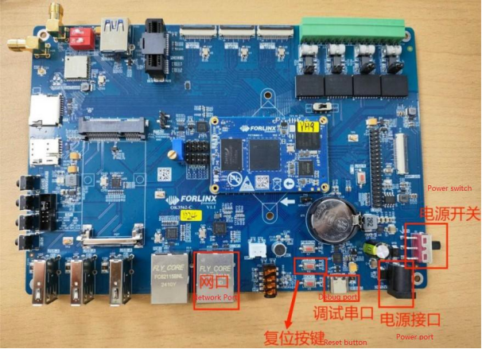
Note: The debug serial port marked in the diagram actually shares a Type-C interface between UART0 and UART9. UART9 serves as the debug serial port for the bare core when AMP (Asymmetric Multi-Processing) function is enabled (switch S4 needs to be set to UART mode).
2.3 Serial Login
The debugging serial port of the OK3562-C - C platform uses a Type - C interface. There is an on - board USB to UART chip, so there’s no need to purchase a USB to serial port debugging tool. It is extremely simple and convenient to use.
2.3.1 Serial Port Connection Settings
Note:
Serial port settings: baud rate 115200, data bit 8, stop bit 1, no parity bit, no flow control;
Serial port terminal login without account;
Software Requirement: The Windows system on the PC end needs to install serial port terminal software. There are multiple options available, and users can choose the software they are familiar with for installation.
Take putty as an example to introduce the login method of serial port:
Step 1: Connect the serial port number of the computer—check the serial port number from the device manager ( Based on the port actually recognized by the computer );
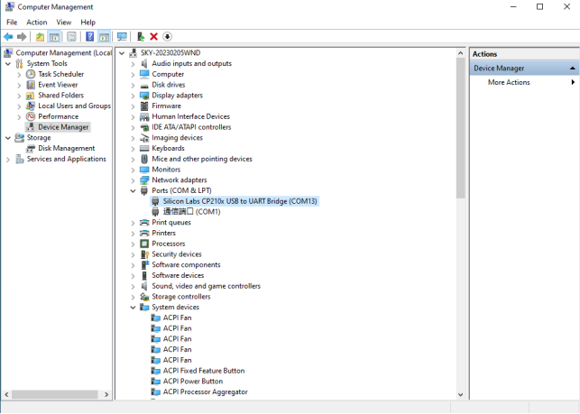
Step 2: Open and set up putty, then set the“ line according to the COM port of the computer used, baud rate 115200;

Step 3: After the setting, input the COM port used by the computer in Saved Sessions. The following figure takes COM24 as an example, save the settings, open the serial port again later, and click on the saved port number;

Step 4: Turn on the power switch of the development board, then there will be a print message output from the serial port (no need to login).
input-event-daemon: Adding device: /dev/input/event9...
input-event-daemon: Start listening on 12 devices...
done
root@ok3562:/# [ 37.424104] vbus5v0_typec0: disabling
[ 37.424151] vbus5v0_typec1: disabling
2.3.2 Serial Login Common Problems
USB to Serial Port Requires Driver Installation (02-User Information\01-Software Information\04-Tools\CP210x_Windows_Drivers.zip)
It is better to use a good quality cable to avoid error codes.
2.4 Network Login Methods
2.4.1 Network Connection Test
Note:
The factory default configuration of the card is static IP; the IP address is 192.168.0.232. Please refer to “3.2.17 Ethernet Configuration” chapter for the static IP changing method;
The computer and board should be on the same network segment for testing.
Before logging into the network, ensure that the direct network connection between the computer and the development board is functioning properly. You can test the connection status via pin command. The specific method is as follows:
1. Connect the development board’s eth0 interface to the computer using an Ethernet cable. Power on the board and boot the kernel. Confirm the blue heartbeat LED is blinking. Check the network card connection, ensuring its LED flashes rapidly. Once confirmed, proceed with testing the network connection;
2. Close the computer firewall (General computer operations, not described here in detail), then open the computer’s run command;
3. Use cmd to open the administrator interface , and the ping command to test the network connection status of the computer and the development board.


A data return indicates a normal network connection.
2.4.2 SSH server
Note:
The factory default configuration of the card is static IP; the IP address is 192.168.0.232. Please refer to “3.2.17 Ethernet Configuration” chapter for the static IP changing method;
Users: forlinx, Password: forlinx;
User: root user; password: root0
1. Use ssh to log in the development board

Click “Open”, the following dialog box will appear, click “Yes” to enter the login screen.

Login as：forlinx
forlinx@192.168.0.232's password: //Follow the prompts to enter the password forlinx for the board's forlinx account
forlinx@ok3562:~#
2.4.3 FTP and SFTP
Path: OK3562-C (Linux) user profile\tool\FileZilla*
OK3562 development board supports FTP and SFTP services, which are automatically enabled upon startup. Once the IP address is configured, it can function as an SFTP server.
The following is an example of how to use SFTP to transfer files using the filezilla tool.
Install the FileZilla tool on Windows and follow the steps shown in the image below to configure it. Use “forlinx” as both the username and password.
Open the FileZilla tool, click on File and select Site Manager.

After successful login, you can upload and download.

2.5 Screen Switching
OK3562 supports MIPI DSI and LVDS screen interfaces, and can only support display on one screen. There are currently three screen switching control methods: dynamic control via uboot menu, specification via kernel device tree, and control through the QT UbootMenu application.
2.5.2 Kernel Device Tree Specification
The method doesn’t require a serial port terminal connection. The system image defaults to the desired configuration, making it suitable for mass production. However, we need to modify the device tree and regenerate the system image once again.
Note: This method has higher priority than the uboot screen selection, and the uboot selection will not take effect after the device tree is modified.
Device tree path: kernel/arch/arm64/boot/dts/rockchip/OK3562-C-common.dtsi
In the kernel source code, open the device dtsi file and find the forlinx-control node as follows:

The node has a default disabled state and needs to be changed to an okay enabled node. Change according to screen requirements.
Parameter Description:
Parameter |
Meaning |
|---|---|
status |
Describe the node state: disabled is for off, okay is for on |
disp_type |
Specify the mipi or lvds screen display. |
Please change the setting parameters as required. After saving, it is necessary to recompile and generate an image.
Examples:
Use the LVDS screen display.

After saving, recompile to generate the image.
2.6 System Shutdown
In general, you can simply turn off the power. However, if you’re working with data storage or using specific functions, avoid unplugging the power to prevent potential irreversible file damage. To ensure the data is completely written, enter the sync command to synchronize the data before turning off the power.
Note: For products designed based on the SoM, if there are scenarios where accidental power loss causes the system to shut down unexpectedly, measures such as adding power-loss protection can be incorporated into the design.
3. OK3562 Platform Interface Function Use and Test
OK3562 platform has excellent support for Qt, especially for multimedia-related classes, such as video decoding and playback, camera, video recording, etc. can all be combined with hardware codecs and OpenGL to achieve the best results.
3.1 Desktop Function Test
3.1.1 Introduction to Interface Function
The desktop is displayed as follows after the board is booted

3.1.2 Hardware Decoding
Click the desktop icon to open the video player.

Application Icons

Note: The test video file is located in the/userdata/media*. mp4**
3.1.3 OpenGL Test
OK3562 supports OpenGL ES3.2; click the desktop icon for OpenGL test.

Application Icons

3.1.4 Music Play Test
“music player” is a simple audio test application that can be used to test the function of the sound card or as a simple audio player.

Application Icons

Application Interfaces
Click the button in the lower left corner and select test audio /userdata/media/test.mp3
3.1.5 4G Test
Note: This test requires inserting a SIM card that has internet access. For detailed instructions, please refer to the Command Line Function Testing 4G section in this manual.
Test supports 4G module (EC20). Insert the 4G module and SIM card while the power is off. After powering on, open the testing application.

Application Icons

Click the connect button, the program will automatically enter the dial-up process and get IP to set DNS, etc.
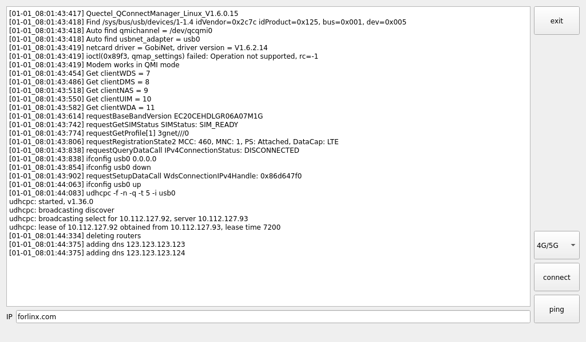
Click the ping to test.
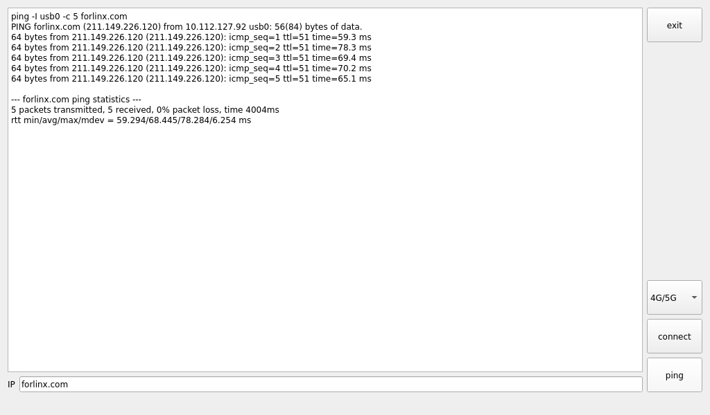
3.1.6 WIFI Test
“WIFI” is a tool for configuring wifi. The OK3562 platform has a 6221A-SRC (RTL8821CS) module onboard by default. The wifi module exists in the system as a mean node, and this test corresponds to wlan0 (other corresponding nodes are used for multiple devices):
Application Icons

Application Interfaces
Select wlan0, enter the router name(the one connected to wifi) in the SSID column, enter the router password in the PAWD column, click CONNECT to the router via wifi, enter a valid ip in the IP column, and then click ping to see if the currently used wifi network is smooth.
Open the Wifi Test app, enter the correct network name and password, and click CONNECT.
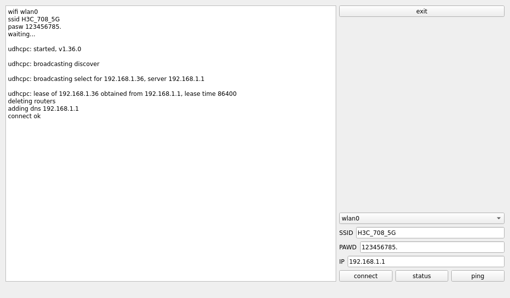
Click ping to test the network after a successful connection.
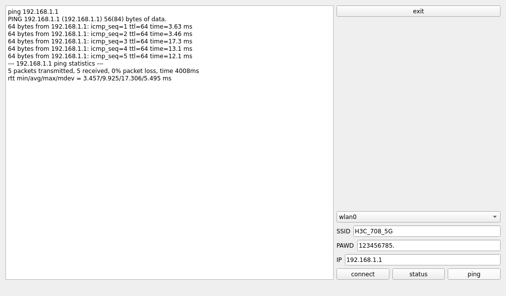
3.1.7 Network Configuration Test
Upon startup, eth0 on OK3562 defaults to static configuration. You can select between DHCP and static modes using the “Network” configuration application. In static mode, you can configure the IP address, subnet mask, gateway, and DNS.

Application Icons
The DHCP mode interface is as follows:
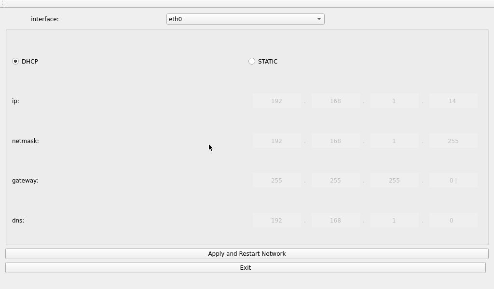
Check DHCP, select the NIC device needing to be configured, and click Apply and Restart Network at the bottom of the interface to restart the network and get the ip automatically.
The static mode interface is as follows:
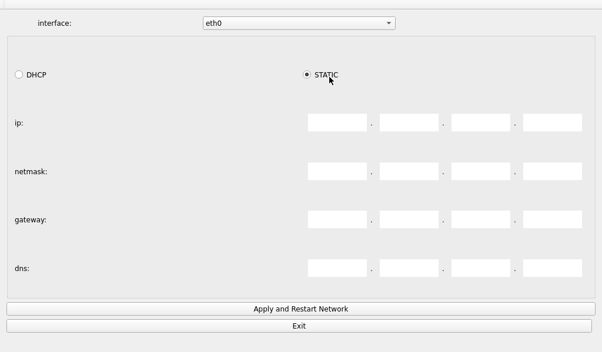
Select the NIC device to be configured in the interface, and enter the ip to be set in the ip field, enter the subnet mask in the netmask field, the gateway in the geteway field, and DNS in the dns field.
Note: Information such as ip set in STATIC mode is saved to the relevant configuration file of the system so each reboot will use the network information set this time; network information configured in DHCP mode, on the other hand, does not need to care about this; ip addresses are dynamically assigned every reboot.
3.1.8 Ping Test
“Ping” is an interface application of the common network testing command ping.

Write the target IP address in the “hostname” column. Click the “ping” button, and the “result” column will display the ping outcome. Click “stop” to end the ping test, and “clear” to erase the information in the “result” column.

3.1.9 Browser Test
“DemoBrowser” is a simple and practical web browser. When using it, please make sure that the network is smooth, and make sure that the dns is available before accessing the external network; when the browser starts, it will visit the official website of Forlinx Embedded by default, and the interface is as follows:
Note: If the development board time is abnormal, it will cause certificate problems. Do not shut down the power immediately after using the browser or the sync command at the command line. Otherwise, it may cause the browser to exit abnormally and not work properly, and can only be solved by re-burning.
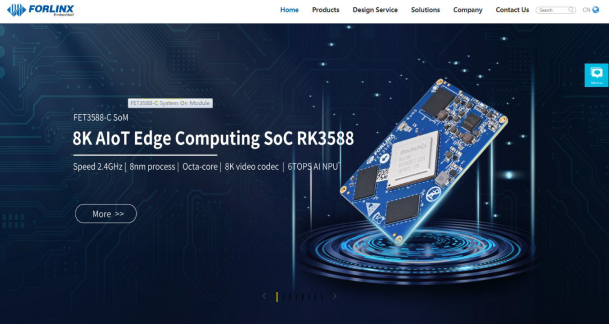
Exit this browser via the upper navigation bar File->Quit.
3.1.10 Watchdog Test
“WatchDog” is an application used to test the watchdog status.
Application Icons
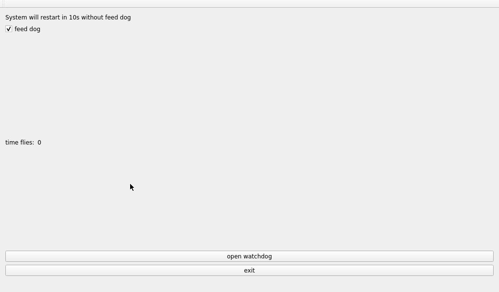
Application Interfaces
Check feed dog and click the open watchdog key, then the watchdog will be activated, the program will carry out the feeding operation, and the system will not reboot under normal circumstances; when unchecking feed dog and clicking open watchdog key, the watchdog function will be activated, the program will not carry out the feeding operation, and the system enters into a reboot after the watchdog is activated for about 10s, which indicates that the watchdog function is normal.
3.1.11 Key Test
The “Keypad” is used to test whether the platform’s own keys are available:
Application Icons

Application Interfaces
By default, OK3562 platform configures the four physical buttons V+, V-, Home, and ESC as the Volume + and Volume - keys, Home, and Return keys, respectively. The corresponding key in the test application will turn blue when pressing the key, indicating that the key is in normal status.
“Exit” the current routine and returns to the system desktop.
3.1.12 RTC Test
The “RTC” application allows you to view and set the current system time:

Application Icons

Application Interfaces
After Set, you can set the time and click Save to finish the setting.
With the RTC backup battery installed, power down and restart the development board to confirm that the RTC clock is set successfully.
3.1.13 Camera Test
Click the desktop icon to open the Camera; the test program supports a USB Camera, which also supports OV13855 and OV5645. Plug in a USB Camera, using the RMONCAM 720P as an example.
Note: The app needs to be connected to the camera before opening.

Application Icons

After opening the application, click UVC Camera to start the camera preview.

In Video Mode, you can click the record button to record, and click the recording button to stop recording. The generated video file is located in /userdata/VIDEO0.MOV.
Playback tests can be performed using the gst-play-1.0/userdata/VIDEO0.mov command.
Click the Video Mode button to switch to the photo mode, and click Capture to take a photo.

The generated file is /userdata/PIC0.jpg.

3.1.14 UART Test

Application Icons
The serial port test is carried out by short-circuiting two RS485 serial ports on the development board.
1. Click the UART test icon to enter the following interface to set the serial port parameters:

2. Click the Setup button in the upper left corner to set the serial port parameters to be consistent with the parameters of the serial port tool on the computer side, as shown below:
to set the serial port parameters to be consistent with the parameters of the serial port tool on the computer side, as shown below:
Relevant Parameter |
Meaning |
|---|---|
Select Serial Port |
Setting the serial port (select UART2, i.e. ttyS2) |
BaudRate |
Set baud rate (115200) |
Data bits |
Set data bits (8 bits) |
Parity |
Set parity bit (no parity) |
Stop bits |
Set stop bit (1 bit) |
Flow control |
Set flow control (no flow control) |

3. After setting the serial port parameters, click the connection button “ ” in the upper left corner. At this time, the test program can carry out the data receiving and sending test;
” in the upper left corner. At this time, the test program can carry out the data receiving and sending test;
4. Run the fltest _ uarttest at the command line terminal. At this time, the screen will display the data received by the serial port.
root@ok3562:/# fltest_uarttest -d /dev/ttyS9 -b 115200 -w
tx_0: iz2Fu9DzFoR5YnMUtJUcxtJmH88LASWr
root@ok3562:/#
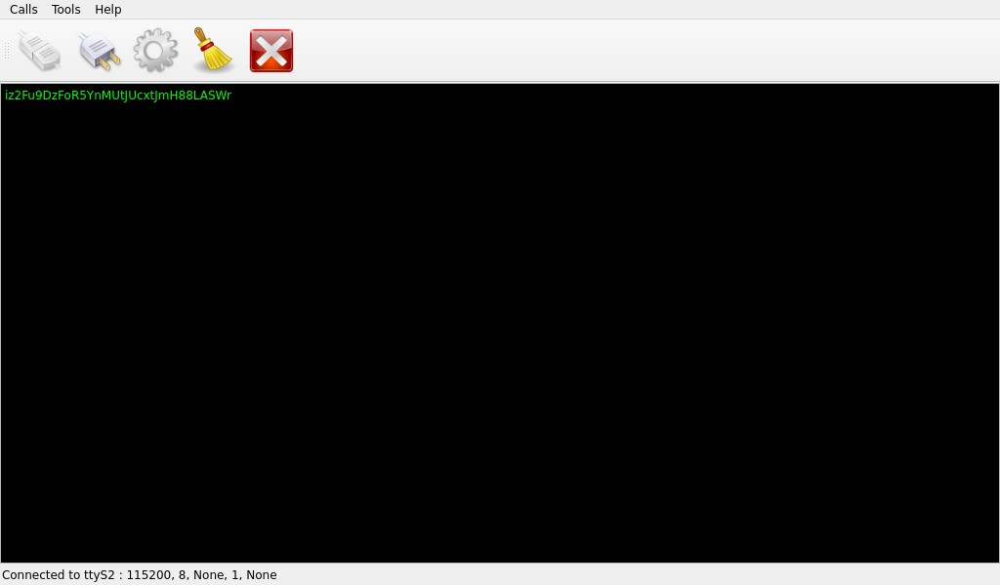
5. Run “fltest_uarttest” in the command line terminal. Clicking the middle of the black screen in the test interface will bring up the virtual keyboard. After entering 32 characters consecutively, the information printed in the command line terminal represents the data sent by Qt.
root@ok3562:/# fltest_uarttest -d /dev/ttyS9 -b 115200 -r
rx_0: 12345678901234567890123456789012
root@ok3562:/#

3.1.15 Database Test
After clicking the desktop icon, the Sqlite test database will be ready.
Application Icons

3.1.16 Backlight Test
“BackLight” is the lcd backlight adjustment application:

Application Icons
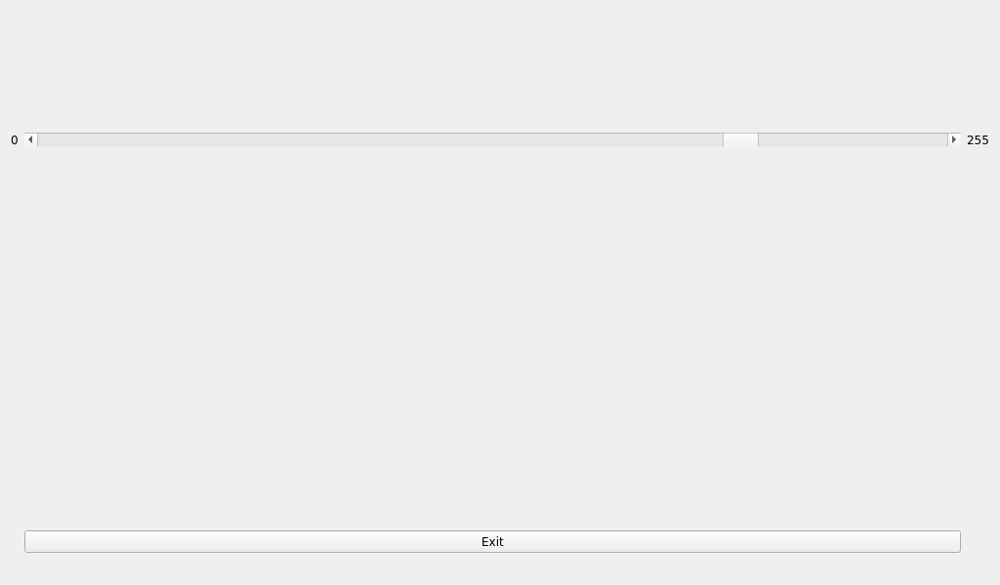
Adjust the brightness of the LCD backlight by sliding the slider in the interface; level 0 is the lowest brightness, and level 255 is the highest brightness.
This test procedure limits the minimum brightness, and the minimum value can be set to 1 on the QT interface. If the backlight needs to be turned off, refer to “3.2.20 LCD Backlight Adjustment”, and set the backlight brightness to 0.
3.1.17 Uboot Menu
Click on the desktop icon to configure the Uboot menu.
to configure the Uboot menu.
In the “disp_type” tab, you can select the screen display.
none：Do not turn on the screen display
mipi：Enable mipi 1024 * 600 screen display
lvds：Enable LVDS 1280 * 800 screen display
In the “amp_start” tab, you can choose whether to enable amp.
off：Off
on：On
In the “combphy_type” tab, you can choose the USB and PCIe multiplexing function.
none：Close combphy
usb：combphy multiplexed as USB function
pcie：combphy multiplexed as pcie function
After successfully making the changes, please ensure to save the settings and restart the development board to apply the configuration.
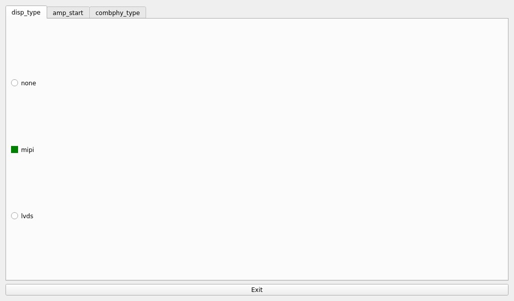


3.1.18 Web Services
The OK3562 development board comes with the lighttpd web server pre-installed, and the lighttpd service has been automatically started at system startup. Enter the IP address of the board into the PC browser to view the web pages in the board’s webserver, as shown in the following figure:

Note: To use this function properly, the network IP of the development board needs to be the same network segment as the network IP of the PC, or the PC is under the subnet of the network where the development board is located.
3.1.19 ADC Test
OK3562-C development board is equipped with 13 x ADC, each channel can connect an adjustable resistor. For testing, select channel saradc0_in5. The hardware diagram of the ADC pin is as follows: input voltage at pin 1 of P11. The current chip uses a 1.8V reference voltage corresponding to a 10-bit ADC maximum of 1024.

Run the QT ADC program to display the results.
program to display the results.
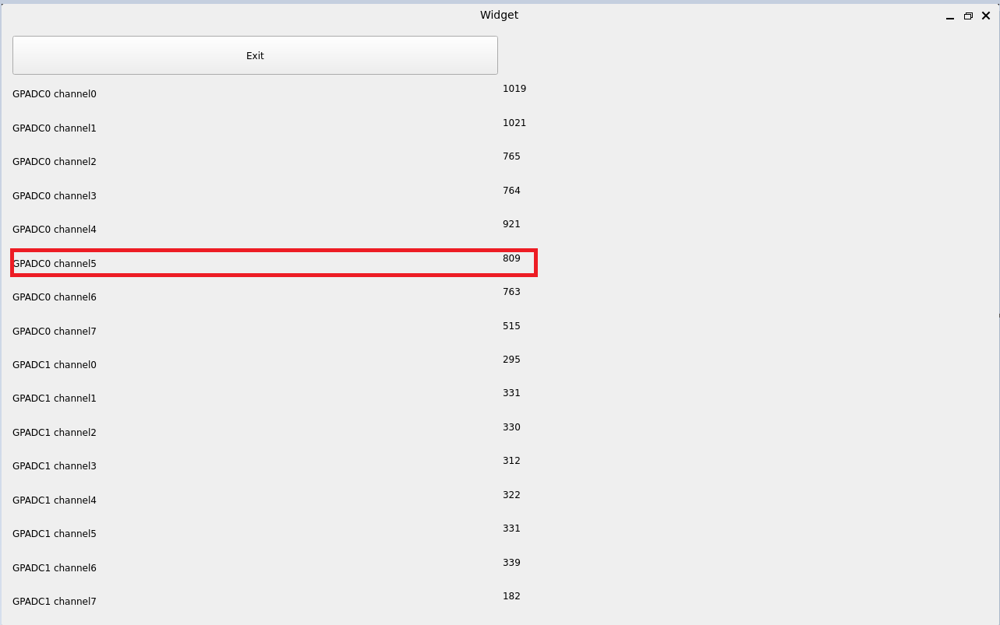
3.1.20 TFTP Upgrading System
Note:
The current version does not support MiniLoaderAll. bin upgrades;
Use tftp udp mode to transmit, port number is 69;
Install the tftpd server tool Tftpd64.4.64.exe.
Path: OK3562-C-Linux User’s Manual/Tools/Tftpd64.4.64.exe
Install Tftpd64.4.64.exe;
Open Tftpd64.4.64.exe and run the test;

CurrentDirectory: Select the OK3562-C partition firmware storage path.
Server interfaces: Select the local IP address.
Note: Please close the window firewall and verify the tftp download file test by yourself.
Open the desktop Tftp Update icon


Please fill in the form according to the actual situation. Select the firmware to update.
Click Tftp: Off to Tftp: On; reboot the board.
The serial port printing information is as follows:

3.1.21 CPU Frequency Configuration Test
Note: The current interface is only configured with A53 core.
Click the desktop icon to enter the next menu:
 ->
->
Application Icons
The maximum CPU clock frequency of OK3562 is 2.0 GHz. By default, the CPU dynamically adjusts the clock frequency according to the load. It is also possible to set a fixed CPU clock frequency.
Click the “Power” icon on the desktop to enter the CPU clock frequency setting page.
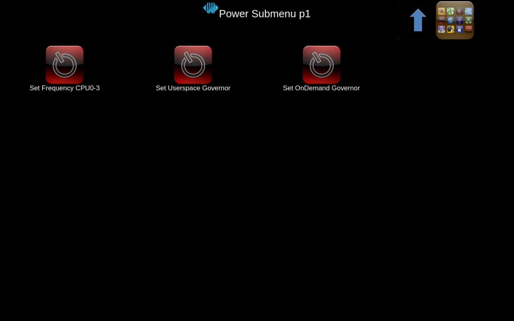
Set the CPU frequency in the user space.
Set FrequencyCPU0-3：Set frequency
Taking setting the CPU frequency as an example, if you need to set a fixed frequency, first click “Set Userspace Governor”, then click “run”. After that, return to the operation interface in the above figure and click “Set Frequency CPU0 - 3” to make the setting.
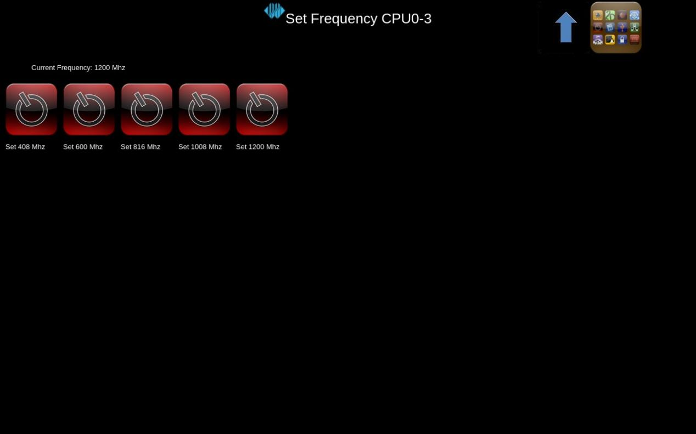
Select the corresponding frequency for setting based on your requirements.
3.1.22 Record Test
Icon：
Before conducting the audio recording test, please insert the prepared microphone into the mic port. Click the icon to enter the recording test application, which can be used to check if the sound card recording function is working properly.
Choose where to save the recording file. Click “Start” to begin recording and “Stop” to end.
Click the Input Device radio box to select “alsa: sysdefault: CARD = rockchiprk809”, click the Channels radio box to select “2”, and the interface is as follows:

Click the Record button to test the recording. The recording file is saved in the root directory as /clip_XXXX.avi.
3.1.23 SPI Test
Icon：
Click on the icon to enter the SPI testing interface. Short-circuit the SPI2_MOSI_M0 and SPI2_MISO_M0 pins, then click “send” below to receive the data sent out and complete the test.
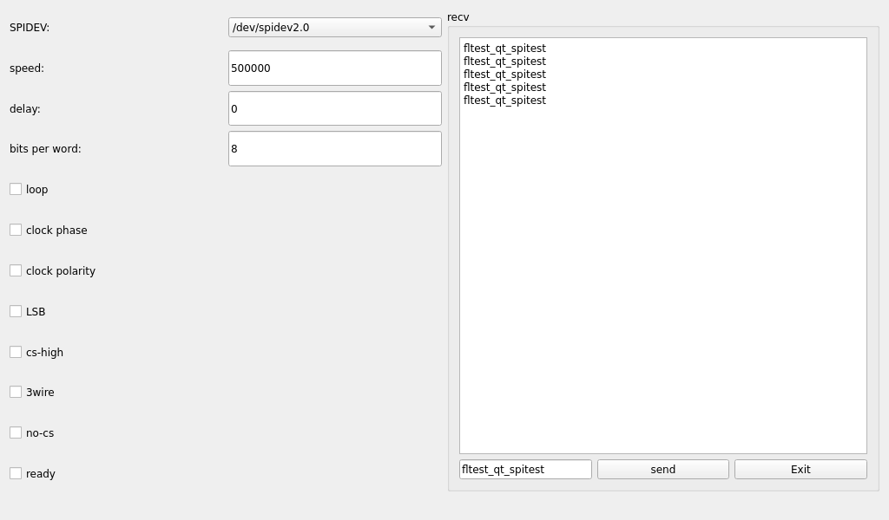
4. OK3562 Command Line Function Test
4.1 Command Line Function Test
The OK3562 platform has various built-in command line tools available to users.
4.1.1 System Information Queries
View kernel:
root@ok3562:~# uname -a
Linux ok3562 5.10.198 #12 SMP Wed Apr 3 14:22:58 CST 2024 aarch64 GNU/Linux
View environment variable information:
root@ok3562:/# env | sort
ADBD_SHELL=/bin/bash
AUTOAUDIOSINK_PREFERRED=pulsesink
CHROMIUM_FLAGS=--enable-wayland-ime
DBUS_SESSION_BUS_ADDRESS=unix:path=/var/run/dbus/system_bus_socket
EDITOR=/bin/vi
GST_DEBUG_NO_COLOR=1
GST_INSPECT_NO_COLORS=1
GST_V4L2SRC_DEFAULT_DEVICE=/dev/video-camera0
GST_V4L2SRC_MAX_RESOLUTION=3840x2160
GST_V4L2SRC_RK_DEVICES=_mainpath:_selfpath:_bypass:_scale
GST_V4L2_PREFERRED_FOURCC=NV12:YU12:NV16:YUY2
GST_V4L2_USE_LIBV4L2=1
GST_VIDEO_CONVERT_PREFERRED_FORMAT=NV12:NV16:I420:YUY2
GST_VIDEO_CONVERT_USE_RGA=1
GST_VIDEO_DECODER_QOS=0
GST_VIDEO_FLIP_USE_RGA=1
HOME=/
LANG=en_US.UTF-8
PATH=/usr/bin:/usr/sbin
PIXMAN_USE_RGA=1
PLAYBIN2_PREFERRED_AUDIOSINK=pulsesink
PULSE_HOME=/userdata/.pulse
PWD=/
QT_QPA_FONTDIR=/usr/share/fonts
QT_QPA_PLATFORM=wayland-egl
QT_QPA_PLATFORM_PLUGIN_PATH=/usr/lib/qt/plugins
RUNLEVEL=#f-04/13/2024
SHELL=/bin/sh
SHLVL=0
TERM=vt102
UMS_FILE=/userdata/ums_shared.img
UMS_FSTYPE=vfat
UMS_MOUNT=0
UMS_MOUNTPOINT=/mnt/ums
UMS_RO=0
UMS_SIZE=256M
USB_FUNCS=adb
USER=root
WAYLANDSINK_FORCE_DMABUF=1
WESTON_DISABLE_ATOMIC=1
WESTON_DRM_KEEP_RATIO=1
WESTON_DRM_MIN_BUFFERS=2
WESTON_DRM_MIRROR=1
WESTON_FREEZE_DISPLAY=/tmp/.freeze_weston
WL_OUTPUT_VERSION=3
XDG_RUNTIME_DIR=/var/run
_=/usr/bin/env
storagemedia=emmc
root@ok3562:/#
4.1.2 FM Test
Note: The quad-core A53 is cpu0, cpu1, cpu2, and cpu3. This process takes cpu0 as an example, and the actual process of cpu1, cpu2, and cpu3 will change at the same time.
All cpufreq governor types supported in the current kernel:
root@ok3562:~# cat /sys/devices/system/cpu/cpu0/cpufreq/scaling_available_governors
interactive conservative ondemand userspace powersave performance schedutil
“userspace” refers to user mode, in which user programs are allowed to adjust the CPU frequency.
View the current CPU supported frequency level.
root@ok3562:~# cat /sys/devices/system/cpu/cpu0/cpufreq/scaling_available_frequencies
408000 600000 816000 1008000 1200000 1416000 1608000 1800000 2016000
//注 工业级CPU频率最高支持1.2GHZ
Set to user mode and modify the frequency to 1200000：
root@ok3562:~# echo userspace > /sys/devices/system/cpu/cpu0/cpufreq/scaling_governor
root@ok3562:~# echo 1200000 > /sys/devices/system/cpu/cpu0/cpufreq/scaling_setspeed
View the modified current frequency:
root@ok3562:~# cat /sys/devices/system/cpu/cpu0/cpufreq/cpuinfo_cur_freq
1200000
4.1.3 Temperature Test
View the temperature value:
root@ok3562:~# cat /sys/class/thermal/thermal_zone0/temp
45307
The temperature value is 45.3°C.
4.1.4 DDR Test
root@ok3562:~# fltest_memory_bandwidth.sh
L1 cache bandwidth rd test with # process
0.008192 9531.99
0.008192 9527.23
0.008192 9531.81
0.008192 9528.35
0.008192 9530.08
L2 cache bandwidth rd test
0.131072 7504.40
0.131072 7682.14
0.131072 7650.60
0.131072 7676.25
0.131072 7609.79
Main mem bandwidth rd test
52.43 3004.34
52.43 3011.42
52.43 3026.72
52.43 3011.59
52.43 3018.35
L1 cache bandwidth wr test with # process
0.008192 15139.01
0.008192 15141.75
0.008192 15139.01
0.008192 15147.22
0.008192 15139.49
L2 cache bandwidth wr test
0.131072 8190.42
0.131072 8724.72
0.131072 8671.11
0.131072 8689.86
0.131072 8733.35
Main mem bandwidth wr test
52.43 1889.05
52.43 1886.74
52.43 1895.13
52.43 1891.37
52.43 1877.35
The OK3562-C has a LPDDR4 write bandwidth of about 1877M/s and a read bandwidth of about 3004M/s.
4.1.5 Watchdog Test
Watchdog is a function often used in embedded systems. The device node of watchdog in OK3562 is /dev/watchdog.
Start the watchdog, set the reset time for 10s, and feed the dog regularly. The system will not restart.
root@ok3562:~# fltest_watchdog -t 10 -c
Watchdog Ticking Away!
When using ctrl+c to end the test program, kicking the dog is stopped, the watchdog is on, and the system is reset after 10s.
If you do not want to reset, enter the shutdown watchdog command within 10s after finishing the program:
root@ok3562:~# fltest_watchdog -d
Start the watchdog, set the reset time for 10s, but do not feed the dog, the system will restart after 10 seconds.
root@ok3562:~# fltest_watchdog -t 10
[ 532.133075] watchdog: watchdog0: watchdog did not stop!
Watchdog Ticking Away!
4.1.6 RTC Function Test
Note: Ensure that button cell batteries are installed on the board and the battery voltage is normal.
RTC test: The main way to set the software and hardware time is by using the date and hwclock utilities. When performing the board power-down and power-up test, the software clock reads whether the RTC clock is synchronized or not.
Time settings:
root@ok3562:~# date -s "2022-12-12 17:23:00" // Set the software time
Mon Dec 12 17:23:00 CST 2022
root@ok3562:~# hwclock -w // Synchronize the software time to the hardware time
root@ok3562:~# hwclock -r // Display the hardware time
Mon Dec 12 17:23:06 CST 2022
Then power down and power up the board, enter the system, and read the system time. After that, we can see that the time has synchronized.
root@ok3562:~# date
Mon Dec 12 17:23:20 CST 2022
4.1.7 Key Test
Use the fltest_keytest command line tool to test the keys. fltest_keytest currently supports the test of four keys on the carrier board, VOL+, VOL-, MENU, and ESC, with key codes 115, 114, 139, and 158, respectively.
Execute the following command, noting that it is event4 when a touchscreen is present:
root@ok3562:~# fltest_keytest /dev/input/event3
At this point, press the lift button in sequence, and the following can be output on the terminal:
key115 Presse // VOL+ pressed
key115 Released // VOL+ released
key114 Presse // VOL- pressed
key114 Released // VOL- released
key139 Presse // MENU pressed
key139 Released // MENU released
key158 Presse // ESC pressed
key158 Released // ESC released
4.1.8 UART Test
UART0, UART2, UART8 and UART9 serial ports are indicated in the schematic diagram of OK3562 platform carrier board, in which UART0 is a debugging serial port, UART8 is a Bluetooth serial port, and UART2 and UART9 are 485 serial ports. The default device names of UART2 and UART9 in the development board are ttyS2 and ttyS9 respectively. Supports up to 4M baud rate
UART |
Device Nodes |
Description |
|---|---|---|
UART2 |
/dev/ttyS2 |
RS485 |
UART8 |
/dev/ttyS8 |
It is used for Bluetooth and is not separately pinned out and can’t be directly used for this test. |
UART9 |
/dev/ttyS9 |
RS485 |
This test uses UART2 and UART9 to short 485 _ B1 and 485 _ B0, 485 _ A1 and 485 _ A0 in P36 port. GND _ 485 _ 0, GND _ 485 _ 1 pin header, as shown in the figure:

Enter the following command in the serial port of the development board:
root@ok3562:/# fltest_uarttest -d /dev/ttyS2 -b 115200 -r &
[1] 1953
root@ok3562:/# fltest_uarttest -d /dev/ttyS9 -b 115200 -w
tx_0: Gpi2GoMkYywl2IE9sEBcG6yI0DpmDbFT
rx_0: Gpi2GoMkYywl2IE9sEBcG6yI0DpmDbFT
[1]+ Done fltest_uarttest -d /dev/ttyS2 -b 115200 -r
root@ok3562:/#
4.1.9 ADC Test
OK3562-C development board is equipped with 13 x ADC, each channel can connect an adjustable resistor. For testing, select channel saradc0_in5. The hardware diagram of the ADC pin is as follows: input voltage at pin 1 of P11. The current chip uses a 1.8V reference voltage corresponding to a 10-bit ADC maximum of 1024.
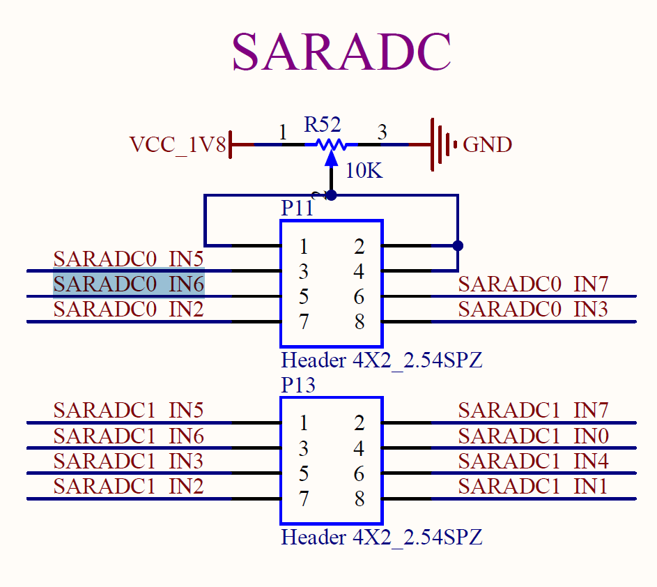
Take SARADC _ VIN2 as an example to test the adjustable resistance value:
root@ok3562:~# cd /sys/bus/iio/devices/iio:device0
root@ok3562:/sys/bus/iio/devices/iio:device0# cat in_voltage5_raw
809
4.1.10 TF Card Test
Note: The SD card mount directory is /run/media/ and supports hot-swapping.
1. Insert the TF card into the TF card slot on the carrier board before power up. Then power up and start, run the command dmesg, and the terminal will have the following printed information:

2. Check the mount directory:
root@ok3562:~# mount | grep "mmcblk1"
/dev/mmcblk1p1 on /run/media/mmcblk1p1 type vfat (rw,relatime,gid=6,fmask=0007,dmask=0007,allow_utime=0020,codepage=936,iocharset=utf8,shortname=mixed,errors=remount-ro)
3. Write test:
root@ok3562:~# dd if=/dev/zero of=/run/media/mmcblk1p1/test bs=1M count=500 conv=fsync
500+0 records in
500+0 records out
524288000 bytes (524 MB, 500 MiB) copied, 10.1131 s, 51.8 MB/s
4. Read test:
Note: To ensure accurate data, restart the board and test the read speed.
root@ok3562:~# dd if=/run/media/mmcblk1p1/test of=/dev/null bs=1M count=500 iflag=direct
500+0 records in
500+0 records out
524288000 bytes (524 MB, 500 MiB) copied, 6.47351 s, 81.0 MB/s
5. After using the TF card, uninstall it with umount before ejecting it.
root@ok3562:~# umount /run/media/mmcblk1p1
Note: Plug and unplug the TF card after exiting the TF card mounting path.
4.1.11 EMMC Test
OK3562 platform eMMC runs in HS200 mode 200MHz clock by default. The following is a simple eMMC read/write speed test: taking the read/write ext4 file system as an example.
Write test:
root@ok3562:~# dd if=/dev/zero of=/test bs=1M count=500 conv=fsync
500+0 records in
500+0 records out
524288000 bytes (524 MB, 500 MiB) copied, 5.18805 s, 101 MB/s
Read test:
Note: To ensure the accuracy of the data, please restart the development board to test the reading speed.
root@ok3562:~# dd if=/test of=/dev/null bs=1M iflag=direct
500+0 records in
500+0 records out
524288000 bytes (524 MB, 500 MiB) copied, 2.1929 s, 239 MB/s
4.1.12 USB Mouse Test
Connect the USB mouse to the USB interface of the OK3562 platform and use the dmesg command, the serial terminal prints the following information:
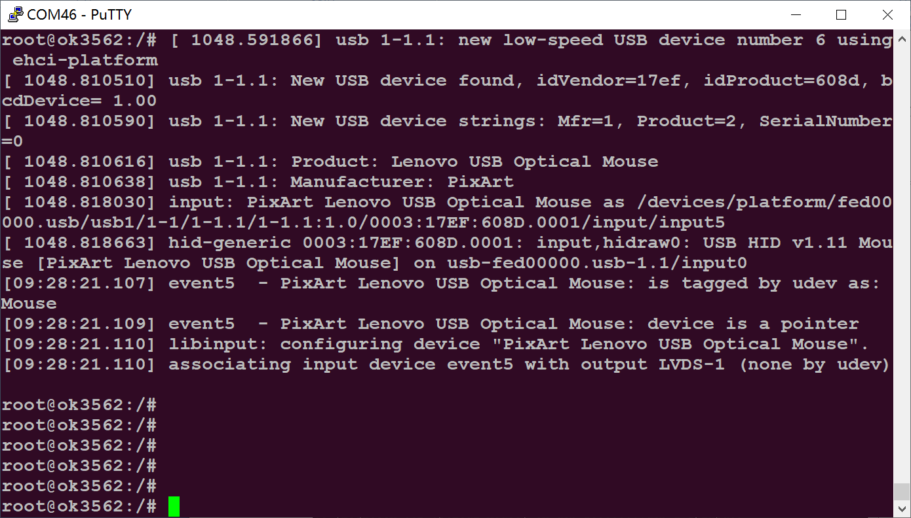
At this time, the arrow cursor appears on the screen, the mouse can work normally.
4.1.13 USB2.0
OK3562 supports three USB2.0 interfaces. You can connect USB mouse, USB keyboard, U disk and other devices on any on-board USB HOST interface, and support hot plug of the above devices. Demonstration with a mounting USB flash drive; the current USB flash drive test support up to 32G, but no test for 32G or above.
The terminal prints information about the USB flash drive, and since many types of USB flash drives exist, the information displayed may vary:
After the development board booting, connect the USB interface disk to the USB host interface of the development board. The default log print information is low, so there will be no print information. Use the dmesg command to view and get information about the USB flash drive.

View the mount directory:
root@ok3562:~# mount | grep "sda1"
/dev/sda1 on /run/media/sda1 type vfat (rw,relatime,fmask=0022,dmask=0022,codepage=936,iocharset=utf8,shortname=mixed,errors=remount-ro)
We can see the USB mount directory: /run/media/sda1
View the contents of the U disk (sda1 is based on the actual USB flash drive partition name).
root@ok3562:~# ls -l /run/media/sda1/
total 8
drwxrwx--- 2 root disk 8192 Sep 23 2021 'System Volume Information'
-rwxrwx--- 1 root disk 0 Apr 25 09:25 test
Write test: Write speeds are limited by the specific storage device:
root@ok3562:~# dd if=/dev/zero of=/run/media/sda1/test bs=1M count=500 conv=fsync
500+0 records in
500+0 records out
524288000 bytes (524 MB, 500 MiB) copied, 28.8323 s, 18.2 MB/s
Read test：
Note: To ensure the accuracy of the data, please restart the development board to test the reading speed.
root@ok3562:~# dd if=/run/media/sda1/test of=/dev/null bs=1M iflag=direct
500+0 records in
500+0 records out
524288000 bytes (524 MB, 500 MiB) copied, 25.0096 s, 21.0 MB/s
Before removing the USB flash drive, it’s necessary to unmount it using ‘’umount’’.
root@ok3562:~# umount /run/media/sda1
Note: Exit the USB flash drive mount path before plugging and unplugging the USB flash drive.
4.1.14 USB to Four Serial Port Test
Note:
Supports XR21V1414 USB to serial port chip driver;
USB to four serial port conversion is an optional module. If you have the need for it, please contact the sales personnel of Forlinx Embedded.
1. After powering on the development board, connecting the USB to four serial port modules via USB HOST shows specific printing info on the terminal.
[ 836.286313] usb 1-1.1: new full-speed USB device number 4 using ehci-platform
[ 836.502174] usb 1-1.1: New USB device found, idVendor=04e2, idProduct=1414, bcdDevice= 0.03
[ 836.502245] usb 1-1.1: New USB device strings: Mfr=0, Product=0, SerialNumber=0
[ 836.504546] cdc_xr_usb_serial 1-1.1:1.0: This device cannot do calls on its own. It is not a modem.
[ 836.505009] cdc_xr_usb_serial 1-1.1:1.0: ttyXR_USB_SERIAL0: USB XR_USB_SERIAL device
[ 836.509062] cdc_xr_usb_serial 1-1.1:1.2: This device cannot do calls on its own. It is not a modem.
[ 836.509550] cdc_xr_usb_serial 1-1.1:1.2: ttyXR_USB_SERIAL1: USB XR_USB_SERIAL device
[ 836.513236] cdc_xr_usb_serial 1-1.1:1.4: This device cannot do calls on its own. It is not a modem.
[ 836.513640] cdc_xr_usb_serial 1-1.1:1.4: ttyXR_USB_SERIAL2: USB XR_USB_SERIAL device
[ 836.517896] cdc_xr_usb_serial 1-1.1:1.6: This device cannot do calls on its own. It is not a modem.
[ 836.518322] cdc_xr_usb_serial 1-1.1:1.6: ttyXR_USB_SERIAL3: USB XR_USB_SERIAL device
2. Check the usb device status by lsusb:
root@ok3562:/# lsusb
Bus 001 Device 001: ID 1d6b:0002
Bus 001 Device 002: ID 1a40:0101
Bus 002 Device 001: ID 1d6b:0001
Bus 001 Device 004: ID 04e2:1414 //The vid and pid of the conversion chip
Check whether a serial port node is generated under dev:
root@3562:/# ls /dev/ ttyXRUSB*
/dev/ttyXRUSB0 /dev/ttyXRUSB1 /dev/ttyXRUSB2 /dev/ttyXRUSB3
3. The mapping between the four extended serial ports and their corresponding device nodes is shown in the diagram below:

4. Refer to “3.2. 8 UART Test” for the test methods.
4.1.15 USB3.0 / USB OTG Test
USB3.0 / USB OTG and PCIe on the OK3562-C platform are multiplexed functions. USB3.0 supports only Host mode, and USB OTG supports only USB2.0.
To test the USB function (including USB3.0 and USB otg), turn the S3 DIP switch on the carrier board to the OFF position, and set the combphy _ type as USB in the Uboot menu. Refer to 4.2.29 Uboot menu.
USB Host mode allows you to connect standard USB devices, while Device mode supports functions such as firmware flashing, ADB file transfer, and debugging.
4.1.15.1 USB3.0 Host Mode:
1. Set the S2 DIP switch on the development board to the ON position;
2. Modify the device tree file arch/arm64/boot/dts/rockchip/OK3562-C-common.dtsi (default in factory image, no need to modify) to change the “dr_mode” property of the “usbdrd_dwc3” node to “host’, as shown in the following image;

3. Recompile the image and flash it into the development board;
4. Set the S3 DIP switch on the carrier board to the OFF position, and also set combphy_type to usb in the U-Boot menu;
5. Connect the USB 3.0 flash drive to the USB 3.0-A port (labeled P33) on the development board and recognize the flash drive.
[ 23.576515] usb 4-1: new SuperSpeed Gen 1 USB device number 2 using xhci-hcd
[ 23.604126] usb 4-1: New USB device found, idVendor=0bda, idProduct=9210, bcdDevice=20.01
[ 23.604191] usb 4-1: New USB device strings: Mfr=1, Product=2, SerialNumber=3
[ 23.604219] usb 4-1: Product: Ugreen Storage Device
[ 23.604242] usb 4-1: Manufacturer: Ugreen
[ 23.604263] usb 4-1: SerialNumber: 012938051990
[ 23.668038] scsi host0: uas
[ 24.080889] scsi 0:0:0:0: Direct-Access INTEL SS DPEKKW256G8 1.00 PQ: 0 ANSI: 6
[ 24.097622] sd 0:0:0:0: [sda] 500118192 512-byte logical blocks: (256 GB/238 GiB)
[ 24.098918] sd 0:0:0:0: [sda] Write Protect is off
[ 24.101591] sd 0:0:0:0: [sda] Write cache: enabled, read cache: enabled, doesn't support DPO or FUA
[ 24.103837] sd 0:0:0:0: [sda] Optimal transfer size 33553920 bytes
[ 24.134645] sda: sda1
[ 24.158935] sd 0:0:0:0: [sda] Attached SCSI disk
6. Check the mount directory:
root@ok3562:~# mount | grep "sda"
/dev/sda1 on /run/media/sda1 type fuseblk (rw,nosuid,nodev,relatime,user_id=0,group_id=0,default_permissions,allow_other,blksize=4096)
The mount path for the USB storage device can be found at /run/media/sda.
7. View the contents of the USB drive (replace “sda” with the actual partition name of the USB drive).
root@ok3562:~# ls -l /run/media/sda1/
total 1048576
-rwxrwxrwx 1 root root 1073741824 Jan 1 1980 test1g
8. Write test: Write speeds are limited by the specific storage device:
root@ok3562:~# dd if=/dev/zero of=/run/media/sda1/test bs=1M count=500 conv=fsync
500+0 records in
500+0 records out
524288000 bytes (524 MB, 500 MiB) copied, 3.60126 s, 146 MB/s
9. Read test:
Note: To ensure the accuracy of the data, please restart the development board to test the reading speed.
root@ok3562:~# dd if=/run/media/sda1/test of=/dev/null bs=1M count=500 iflag=direct
500+0 records in
500+0 records out
524288000 bytes (524 MB, 500 MiB) copied, 1.15981 s, 452 MB/s
10. Before removing the USB flash drive, it’s necessary to unmount it using ‘’umount’’.
root@ok3562:~# umount /run/media/sda1
Note: Exit the USB flash drive mount path before plugging and unplugging the USB flash drive.
4.1.15.2 USB OTG Mode
1. Modify the usbdrd_dwc3 node in the device tree arch/arm64/boot/dts/rockchip/OK3562-C-common.dtsi, as shown in the following image;
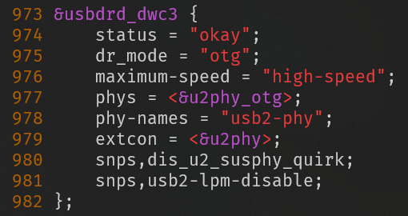
2. Recompile the image and flash it into the development board;
3. Set the S3 DIP switch on the carrier board to the OFF position, and also set combphy_type to usb in the U-Boot menu.
Host mode requires setting switch S2 on the carrier board to the ON position.
Insert a USB flash drive into the P33 USB-A port to enable recognition. The USB flash drive operates at USB 2.0 speed (Toggle switch S2 to OFF and back to ON if automatic recognition fails).
Connect the USB flash disk to the USB3.0-A port of the development board (silk-screen P33) to identify the USB flash disk:
[ 48.317004] usb 3-1: new high-speed USB device number 3 using xhci-hcd
[ 48.460355] usb 3-1: New USB device found, idVendor=05e3, idProduct=0747, bcdDevice= 8.19
[ 48.460422] usb 3-1: New USB device strings: Mfr=3, Product=4, SerialNumber=5
[ 48.460449] usb 3-1: Product: USB Storage
[ 48.460470] usb 3-1: Manufacturer: Generic
[ 48.460491] usb 3-1: SerialNumber: 000000000819
[ 48.463227] usb-storage 3-1:1.0: USB Mass Storage device detected
[ 48.465081] scsi host0: usb-storage 3-1:1.0
[ 49.492654] scsi 0:0:0:0: Direct-Access Generic STORAGE DEVICE 0819 PQ: 0 ANSI: 6
[ 49.940084] sd 0:0:0:0: [sda] 124735488 512-byte logical blocks: (63.9 GB/59.5 GiB)
[ 49.941418] sd 0:0:0:0: [sda] Write Protect is off
[ 49.942545] sd 0:0:0:0: [sda] Write cache: disabled, read cache: enabled, doesn't support DPO or FUA
[ 49.970261] sd 0:0:0:0: [sda] Attached SCSI removable disk
In Device mode, the S2 DIP switch on the carrier board needs to be set to the OFF position.
Connect the computer to the development board P35 USB-type C socket with the USB-a to USB-C cable, and restart the development board.

Rockchip development tool shows “found an ADB device”, you can download files from the development board to the computer through ADB pull, and upload files from the computer to the development board through ADB push.
Open the RKDevTool_Release/bin directory in the Win10 PowerShell terminal.
Windows PowerShell
Copyright © Microsoft Corporation. All rights reserved.
Try the new cross - platform PowerShell at https://aka.ms/pscore6
PS C:\Users\Acer> cd D:\rk3562\RKDevTool\RKDevTool_Release\bin
PS D:\rk3562\RKDevTool\RKDevTool_Release\bin> .\adb.exe devices
List of devices attached
38bc17e18f2c57bc device
PS D:\rk3562\RKDevTool\RKDevTool_Release\bin> .\adb.exe push D:\test.mp3 /home/forlinx/
D:\test.mp3: 1 file pushed. 13.8 MB/s (4818092 bytes in 0.334s)
PS D:\rk3562\RKDevTool\RKDevTool_Release\bin>
PS D:\rk3562\RKDevTool\RKDevTool_Release\bin> .\adb.exe pull /home/forlinx/test
/home/forlinx/test: 1 file pulled. 0.0 MB/s (29 bytes in 0.002s)
PS D:\rk3562\RKDevTool\RKDevTool_Release\bin> ls .\test
Directory: D:\rk3562\RKDevTool\RKDevTool_Release\bin
Mode LastWriteTime Length Name
---- ------------- ------ ----
-a---- 2024/4/25 12:14 29 test
PS D:\rk3562\RKDevTool\RKDevTool_Release\bin>
PS D:\rk3562\RKDevTool\RKDevTool_Release\bin>
4.1.16 PCIE Test
Note: OK3562 PCIE 2.0 and USB 3.0 cannot be used simultaneously.
OK3562-C board has 1 x PCIE 2.0.
Before powering up the system, insert the PCIE module into the PCIE card slot on the carrier board. Set the DIP switch S3 on the carrier board to ON, and in the U-Boot menu, set combphy_type to pcie. Refer to “4.2.29 Uboot Menu”.
After powering up and booting, from lspci we can see that the corresponding device enumeration is successful.

Due to the many types of pcie devices, it may not be supported by the kernel by default, so you need to add the corresponding driver for the compiled device by yourself.
Take the E1000 PCIe card as an example, the Linux kernel already includes this driver by default. After plugging in the NIC, powering up, and booting, we can see the enumeration information with the Ethernet interface.
root@ok3562:/# dmesg | grep e1000e
[ 4.529083] e1000e: Intel(R) PRO/1000 Network Driver
[ 4.529098] e1000e: Copyright(c) 1999 - 2015 Intel Corporation.
[ 4.773406] e1000e 0000:01:00.0: enabling device (0000 -> 0002)
[ 4.773709] e1000e 0000:01:00.0: Interrupt Throttling Rate (ints/sec) set to dynamic conservative mode
[ 4.819936] e1000e 0000:01:00.0 0000:01:00.0 (uninitialized): registered PHC clock
[ 4.872420] e1000e 0000:01:00.0 eth2: (PCI Express:2.5GT/s:Width x1) 68:05:ca:1a:e4:33
[ 4.872429] e1000e 0000:01:00.0 eth2: Intel(R) PRO/1000 Network Connection
[ 4.872452] e1000e 0000:01:00.0 eth2: MAC: 3, PHY: 8, PBA No: E46981-008
root@ok3562:/#
root@ok3562:/# ifconfig eth2
eth2 Link encap:Ethernet HWaddr 68:05:CA:1A:E4:33
BROADCAST MULTICAST MTU:1500 Metric:1
RX packets:0 errors:0 dropped:0 overruns:0 frame:0
TX packets:0 errors:0 dropped:0 overruns:0 carrier:0
collisions:0 txqueuelen:1000
RX bytes:0 (0.0 B) TX bytes:0 (0.0 B)
Interrupt:92 Memory:fc2c0000-fc2e0000
root@ok3562:/#
Test bandwidth with iperf3
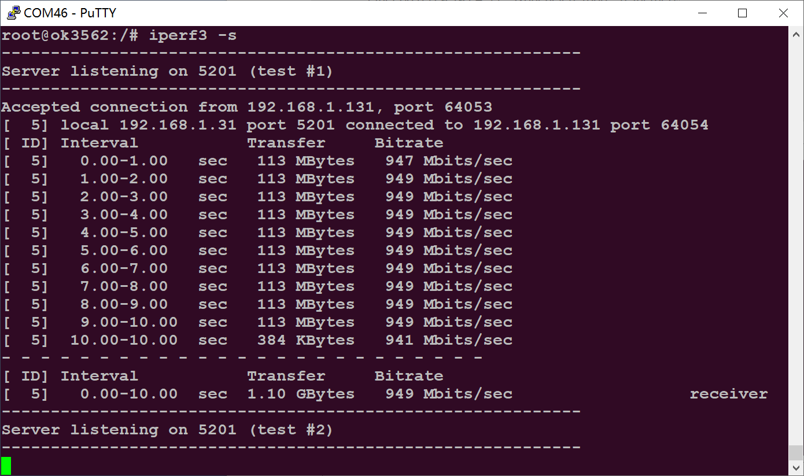

4.1.17 Ethernet Configuration
OK3562-C development board is equipped with two network cards, one Gigabit and one hundred-megabit. When connected to the network, eth0 is configured with a static IP address by default upon factory settings.
The path to the configuration file is: /etc/network/interfaces. The IP configuration is:
auto eth0
iface eth0 inet dhcp
Set a static IP configuration. The following takes setting the IP of eth0 to 192.168.0.232 as an example:
auto eth0
iface eth0 inet static
address 192.168.0.232
netmask 255.255.255.0
gateway 192.168.0.1
Parameter |
Meaning |
|---|---|
iface |
Used to specify a network card that requires a fixed IP |
address |
Used to specify an IP address that needs to be fixed |
netmask |
Used to set the subnet mask |
gateway |
Used to specify a gateway |
After setting up, use the sync file synchronization command to reboot the development board or restart the service for the configuration to take effect.
root@ok3562:~# ifdown -a
root@ok3562:~# ifup -a
4.1.18 WIFI Test
Note: The network environment is different, so please set it according to the actual situation when you do this experiment.
OK3562 platform supports WIFI Bluetooth 2-in-1 module: 6221A-SRC (RTL8821CS).
STA Mode
This mode means that it acts as a station and connects to the wireless network. In the following test, the router uses WPA encryption, the connected wifi hotspot name is: H3C_708_5G and the password is: 123456785. Due to the different network environments, please set up according to the actual situation when conducting this test:
1. Enter the following command in the development board terminal:
root@ok3562:~# fltest_wifi.sh -I wlan0 -s H3C_708_5G -p 123456785.
The meanings of the related parameters in the command are as follows:
Parameter |
Meaning |
|---|---|
-I |
Different wifi modules use different parameters, and specify the WIFI device name. |
-s |
Actual wifi hotspot connected |
-p |
-p：followed by the parameter Password refers to the password of the actual wifi hotspot to be connected. If the current hotspot does not have a password, the parameter after -p is NONE. |
The serial port prints as follows:
root@ok3562:/# fltest_wifi.sh -i wlan0 -s H3C_708_5G -p 123456785.
[ 1493.212161] rk_gmac-dwmac ffa80000.ethernet eth0: Link is Down
wifi wlan0
ssid H3C_708_5G
pasw 123456785.
waiting...
[ 1494.995715] start_addr=(0x8000), end_addr=(0x10000), buffer_size=(0x8000), smp_number_max=(4096)
[ 1498.300935] RTW: wlan0- hw port(0) mac_addr =5c:c5:63:66:df:27
[ 1498.331973] ========== ACS (VER-3) ==========
[ 1498.332037] Best 24G Channel:2
[ 1498.332058] Best 5G Channel:40
[ 1498.332058]
[ 1498.339855] RTW: rtw_set_802_11_connect(wlan0) fw_state=0x00000008
[ 1498.558831] RTW: start auth
[ 1498.559981] RTW: auth success, start assoc
[ 1498.561641] RTW: assoc success
[ 1498.563384] RTW: ============ STA [14:51:7e:62:fc:87] ===================
[ 1498.563432] RTW: mac_id : 0
[ 1498.563440] RTW: wireless_mode : 0x24
[ 1498.563446] RTW: mimo_type : 0
[ 1498.563455] RTW: static smps : N
[ 1498.563463] RTW: bw_mode : 80MHz, ra_bw_mode : 80MHz
[ 1498.563471] RTW: rate_id : 10
[ 1498.563480] RTW: rssi : -1 (%), rssi_level : 0
[ 1498.563488] RTW: is_support_sgi : Y, is_vht_enable : Y
[ 1498.563495] RTW: disable_ra : N, disable_pt : N
[ 1498.563501] RTW: is_noisy : N
[ 1498.563509] RTW: txrx_state : 0
[ 1498.563517] RTW: curr_tx_rate : CCK_1M (L)
[ 1498.563524] RTW: curr_tx_bw : 20MHz
[ 1498.563532] RTW: curr_retry_ratio : 0
[ 1498.563538] RTW: ra_mask : 0x00000000003ffff0
[ 1498.563538]
[ 1498.564273] RTW: recv eapol packet 1/4
[ 1498.565226] RTW: send eapol packet 2/4
[ 1498.569129] RTW: recv eapol packet 3/4
[ 1498.569586] RTW: send eapol packet 4/4
[ 1498.570094] RTW: set pairwise key camid:0, addr:14:51:7e:62:fc:87, kid:0, type:AES
[ 1498.570729] IPv6: ADDRCONF(NETDEV_CHANGE): wlan0: link becomes ready
[ 1498.571163] RTW: set group key camid:1, addr:14:51:7e:62:fc:87, kid:1, type:TKIP
udhcpc: started, v1.36.0
udhcpc: broadcasting discover
udhcpc: broadcasting select for 192.168.1.30, server 192.168.1.1
udhcpc: lease of 192.168.1.30 obtained from 192.168.1.1, lease time 86400
deleting routers
adding dns 192.168.1.1
connect ok
root@ok3562:/#
2. Check whether it can ping the external network and enter the following command in the terminal:
root@ok3562:~# ping baidu.com -c 4 //Specify to ping 4 times
PING baidu.com (39.156.66.10) 56(84) bytes of data.
64 bytes from 39.156.66.10 (39.156.66.10): icmp_seq=1 ttl=51 time=14.6 ms
64 bytes from 39.156.66.10 (39.156.66.10): icmp_seq=2 ttl=51 time=8.19 ms
64 bytes from 39.156.66.10 (39.156.66.10): icmp_seq=3 ttl=51 time=8.86 ms
64 bytes from 39.156.66.10 (39.156.66.10): icmp_seq=4 ttl=51 time=7.93 ms
--- baidu.com ping statistics ---
4 packets transmitted, 4 received, 0% packet loss, time 3005ms
rtt min/avg/max/mdev = 7.925/9.884/14.565/2.723 ms
root@ok3562:/#
AP Mode
Before conducting this test, ensure that the Gigabit network card eth0 is connected to the network and functioning properly, so that the mobile phone can access the Internet after connecting to the hotspot.
Check the driver loading status:
root@ok3562:~# lsmod //View loaded module
Module Size Used by Tainted: G
8821cs 2793472 0
Configuration Hotspot;
WiFi Hotspot Name: OK3562_WIFI_2.4G_AP
Password: 12345678
Check by hotspot name, password and /etc/hostapd-2.4g.conf.
root@ok3562:~# fltest_hostap.sh
[ 705.365653] wlan: Received disassociation request on mlan0, reason: 3
[ 705.365693] wlan: REASON: (Deauth) Sending STA is leaving (or has left) IBSS or ESS
hostapd: no process found
Stopping dnsmasq (via systemctl): dnsmasq.service.
Configuration file: /etc/hostapd-2.4g.conf
[ 706.760789] uap0: Skip change virtual intf on uap: type=3
Using interface uap0 with hwaddr 14:13:33:63:f0:73 and ssid "OK3562_WIFI_2.4G_AP"
[ 706.777774] wlan: Starting AP
[ 706.778591] Get ht_cap from beacon ies: 0xc
[ 706.779094] fw doesn't support 11ax
[ 706.789807] wlan: AP started
[ 706.791465] Set AC=3, txop=47 cwmin=3, cwmax=7 aifs=1
[ 706.793782] Set AC=2, txop=94 cwmin=7, cwmax=15 aifs=1
[ 706.796067] Set AC=0, txop=0 cwmin=15, cwmax=63 aifs=3
[ 706.798295] Set AC=1, txop=0 cwmin=15, cwmax=1023 aifs=7
uap0: interface state UNINITIALIZED->ENABLED
uap0: AP-ENABLED
Starting dnsmasq (via systemctl): dnsmasq.service.
4.1.19 Bluetooth Test
6221A-SRC（RTL8821CS）module on the OK3562 carrier board integrates Bluetooth. This section demonstrates data transfer via Bluetooth between a cell phone and the development board. It can support Bluetooth up to 4.2.
1. Bluetooth Configuration
root@ok3562:~# bluetoothctl // Open the bluez Bluetooth tool
[NEW] Controller B8:4D:43:12:43:6F forlinx [default]
Agent registered
[bluetooth]# power on // Start the Bluetooth device
Changing power on succeeded
[bluetooth]# pairable on // Set to pairing mode
Changing pairable on succeeded
[bluetooth]# discoverable on // Set to discoverable mode
[bluetooth]# [ 1547.589820] Bluetooth: hu ffffffc066059c00 retransmitting 1 pkts
Changing discoverable on succeeded
[CHG] Controller B8:4D:43:12:43:6F Discoverable: yes
[bluetooth]# agent on // Start the agent
Agent is already registered
[bluetooth]# default-agent // Set the current agent as the default
Default agent request successful
2. Development Board Passive Pairing.
At this time, open the PC Bluetooth search, and a “OK3562” device will appear. Select pairing.

At the same time the printing message displays on the development board as follows, enter yes
[NEW] Device 2C:DB:07:C7:4F:F6 DESKTOP-VND9V1F
Request confirmation
[agent] Confirm passkey 678054 (yes/no): yes
[CHG] Device 2C:DB:07:C7:4F:F6 UUIDs: 0000110c-0000-1000-8000-00805f9b34fb
[CHG] Device 2C:DB:07:C7:4F:F6 UUIDs: 0000110e-0000-1000-8000-00805f9b34fb
[CHG] Device 2C:DB:07:C7:4F:F6 Modalias: bluetooth:v0006p0001d0A00
[CHG] Device 2C:DB:07:C7:4F:F6 UUIDs: 00001000-0000-1000-8000-00805f9b34fb
[CHG] Device 2C:DB:07:C7:4F:F6 UUIDs: 0000110a-0000-1000-8000-00805f9b34fb
[CHG] Device 2C:DB:07:C7:4F:F6 UUIDs: 0000110b-0000-1000-8000-00805f9b34fb
[CHG] Device 2C:DB:07:C7:4F:F6 UUIDs: 0000110c-0000-1000-8000-00805f9b34fb
[CHG] Device 2C:DB:07:C7:4F:F6 UUIDs: 0000110e-0000-1000-8000-00805f9b34fb
[CHG] Device 2C:DB:07:C7:4F:F6 UUIDs: 00001115-0000-1000-8000-00805f9b34fb
[CHG] Device 2C:DB:07:C7:4F:F6 UUIDs: 0000111e-0000-1000-8000-00805f9b34fb
[CHG] Device 2C:DB:07:C7:4F:F6 UUIDs: 0000111f-0000-1000-8000-00805f9b34fb
[CHG] Device 2C:DB:07:C7:4F:F6 UUIDs: 00001200-0000-1000-8000-00805f9b34fb
[CHG] Device 2C:DB:07:C7:4F:F6 UUIDs: c7f94713-891e-496a-a0e7-983a0946126e
[CHG] Device 2C:DB:07:C7:4F:F6 ServicesResolved: yes
[CHG] Device 2C:DB:07:C7:4F:F6 Paired: yes
Authorize service
[agent] Authorize service 0000110e-0000-1000-8000-00805f9b34fb (yes/no): yes
Authorize service
[agent] Authorize service 0000110d-0000-1000-8000-00805f9b34fb (yes/no): yes
[CHG] Device 2C:DB:07:C7:4F:F6 UUIDs: 00001000-0000-1000-8000-00805f9b34fb
[CHG] Device 2C:DB:07:C7:4F:F6 UUIDs: 0000110a-0000-1000-8000-00805f9b34fb
[CHG] Device 2C:DB:07:C7:4F:F6 UUIDs: 0000110b-0000-1000-8000-00805f9b34fb
[CHG] Device 2C:DB:07:C7:4F:F6 UUIDs: 0000110c-0000-1000-8000-00805f9b34fb
[CHG] Device 2C:DB:07:C7:4F:F6 UUIDs: 0000110d-0000-1000-8000-00805f9b34fb
[CHG] Device 2C:DB:07:C7:4F:F6 UUIDs: 0000110e-0000-1000-8000-00805f9b34fb
[CHG] Device 2C:DB:07:C7:4F:F6 UUIDs: 00001115-0000-1000-8000-00805f9b34fb
[CHG] Device 2C:DB:07:C7:4F:F6 UUIDs: 0000111e-0000-1000-8000-00805f9b34fb
[CHG] Device 2C:DB:07:C7:4F:F6 UUIDs: 0000111f-0000-1000-8000-00805f9b34fb
[CHG] Device 2C:DB:07:C7:4F:F6 UUIDs: 00001200-0000-1000-8000-00805f9b34fb
[CHG] Device 2C:DB:07:C7:4F:F6 UUIDs: c7f94713-891e-496a-a0e7-983a0946126e
View and remove connected devices:
[bluetooth]# devices //Search for discoverable Bluetooth devices
Device 2C:DB:07:C7:4F:F6 DESKTOP-VND9V1F
[bluetooth]# remove 2C:DB:07:C7:4F:F6 //Remove the device
3. Development board active pairing
In addition to passive pairing, it is also possible to send an active pairing request from the development board terminal
[bluetooth]# scan on // Search for discoverable Bluetooth devices
Discovery started
[CHG] Controller 14:13:33:63:EF:72 Discovering: yes
[NEW] Device FC:E8:00:CF:42:E3 EDIFIER BLE
[NEW] Device 5C:50:51:B5:85:4B 5C-50-51-B5-85-4B
[CHG] Device FC:E8:00:CF:42:E3 RSSI: -92
[bluetooth]# scan off // Stop the search
[bluetooth]# pair 2C:DB:07:C7:4F:F6 // Pair with the Bluetooth device
Attempting to pair with 2C:DB:07:C7:4F:F6
[CHG] Device 2C:DB:07:C7:4F:F6 Connected: yes
Request confirmation
[agent] Confirm passkey 745068 (yes/no): yes // Confirm the passkey
4. Development board to receive documents
After successful pairing, on the PC side, Bluetooth can send files to the OK3562-C.

Received files are saved in the /tmp directory.
5. The development board to send files
Similarly, the OK3562-C can send files to a cell phone, test is as follows:
6. OK3562-C development board to send files to the cell phone, the test method is as follows:
root@ok3562:~# fltest_obexctl.sh // Start obexctl
[NEW] Client /org/bluez/obex
[obex]# connect 2C:DB:07:C7:4F:F6 // Connect to the MAC of the Bluetooth device for communication
Attempting to connect to 2C:DB:07:C7:4F:F6
[NEW] Session /org/bluez/obex/client/session1 [default]
[NEW] ObjectPush /org/bluez/obex/client/session1
Connection successful
[C4:E1:A1:BA:A4:9E]# send /userdata/media/test.mp3 // Send a file

The phone will receive the incoming file request and click “Receive” to transfer the file.
4.1.20 4G
Note:
When using the IoT card to test, the module firmware version needs to be confirmed, the low firmware version is not supported, and EC20 needs to be upgraded;
Some IoT cards require a dedicated account number and password when dialing, and users adjust the commands according to the situation;
The quectelCM –help command allows you to see the meaning of the relevant parameters.
The OK3562 supports the 4G module EC20. Before powering on the development board, connect the 4G module and insert the SIM card, then start the board.
1. After connecting the module and powering up the board and module, check the USB status through the lsusb command;
root@ok3562:~# lsusb
Bus 001 Device 001: ID 1d6b:0002
Bus 001 Device 004: ID 0bda:9210
Bus 001 Device 003: ID 17ef:608d
Bus 001 Device 002: ID 1a40:0101
Bus 002 Device 001: ID 1d6b:0001
Bus 002 Device 003: ID 2c7c:0125 //EC20 VID and PID
View device node status under /dev.
root@ok3562:~# ls /dev/ttyUSB*
/dev/ttyUSB0 /dev/ttyUSB1 /dev/ttyUSB2 /dev/ttyUSB3
2. After the equipment is successfully identified, the dial-up Internet access test can be conducted. fltest_quectel.sh calls quectelCM, see /usr/bin/fltest_quectel.sh for specific commands;
root@ok3562:~# fltest_quectel.sh &
Printing information is as follows:
eth0: flags=4163<UP,BROADCAST,RUNNING,MULTICAST> mtu 1500
eth1: flags=4099<UP,BROADCAST,MULTICAST> mtu 1500
[04-02_01:24:28:549] Quectel_QConnectManager_Linux_V1.6.0.24
[04-02_01:24:28:550] Find /sys/bus/usb/devices/2-1 idVendor=0x2c7c idProduct=0x125, bus=0x002, dev=0x003
[04-02_01:24:28:559] Auto find qmichannel = /dev/qcqmi0
[04-02_01:24:28:563] Auto find usbnet_adapter = usb0
[04-02_01:24:28:568] netcard driver = GobiNet, driver version = V1.6.2.14
[04-02_01:24:28:574] Modem works in QMI mode
[04-02_01:24:28:631] Get clientWDS = 7
[04-02_01:24:28:663] Get clientDMS = 8
[04-02_01:24:28:695] Get clientNAS = 9
[04-02_01:24:28:727] Get clientUIM = 10
[04-02_01:24:28:759] Get clientWDA = 11
[04-02_01:24:28:790] requestBaseBandVersion EM05CEFCR06A02M1G_ND
[04-02_01:24:28:918] requestGetSIMStatus SIMStatus: SIM_READY
[04-02_01:24:28:950] requestGetProfile[1] 3gnet///0
[04-02_01:24:28:982] requestRegistrationState2 MCC: 460, MNC: 1, PS: Attached, DataCap: LTE
[04-02_01:24:29:015] requestQueryDataCall IPv4ConnectionStatus: DISCONNECTED
[04-02_01:24:29:016] ifconfig usb0 0.0.0.0
[04-02_01:24:29:031] ifconfig usb0 down
[04-02_01:24:29:110] requestSetupDataCall WdsConnectionIPv4Handle: 0x86cfbe60
[04-02_01:24:29:271] ifconfig usb0 up
[04-02_01:24:29:292] No default.script found, it should be in '/usr/share/udhcpc/' or '/etc//udhcpc' depend on your udhcpc version!
[04-02_01:24:29:298] busybox udhcpc -f -n -q -t 5 -i usb0
udhcpc: started, v1.30.1
udhcpc: sending discover
udhcpc: sending select for 10.117.151.120
udhcpc: lease of 10.117.151.120 obtained, lease time 7200
[04-02_01:24:29:440] ip -4 address flush dev usb0
[04-02_01:24:29:450] ip -4 address add 10.117.151.120/28 dev usb0
[04-02_01:24:29:465] ip -4 route add default via 10.117.151.121 dev usb0
3. Before testing, check the relevant configuration;
View Gateway Configuration
root@ok3562:~# route
Kernel IP routing table
Destination Gateway Genmask Flags Metric Ref Use Iface
default _gateway 0.0.0.0 UG 0 0 0 wwan0
10.52.86.48 0.0.0.0 255.255.255.248 U 0 0 0 wwan0
172.17.0.0 0.0.0.0 255.255.0.0 U 0 0 0 docker0
Viewing DNS Configuration
root@ok3562:~# cat /etc/resolv.conf
nameserver 123.123.123.123 # IPV4 usb0
nameserver 123.123.123.124 # IPV4 usb0
nameserver 8.8.8.8
nameserver 114.114.114.114
nameserver 127.0.0.53
4. After setting up DNS and routing, we can ping the domain name.
root@ok3562:~# ping -I usb0 www.baidu.com -c 3 //Specify usb0 NIC to ping 3 times
PING www.a.shifen.com (110.242.68.4) from 10.52.86.52 wwan0: 56(84) bytes of data.
64 bytes from 110.242.68.4 (110.242.68.4): icmp_seq=1 ttl=55 time=47.4 ms
64 bytes from 110.242.68.4 (110.242.68.4): icmp_seq=2 ttl=55 time=54.2 ms
64 bytes from 110.242.68.4 (110.242.68.4): icmp_seq=3 ttl=55 time=40.2 ms
--- www.a.shifen.com ping statistics ---
3 packets transmitted, 3 received, 0% packet loss, time 2003ms
rtt min/avg/max/mdev = 40.239/47.300/54.259/5.724 ms
4.1.21 Play/Record Test
There is a standard 3.5mm audio socket, which is led out via a white XH2.0 - 2P socket P22. It can drive an 8Ω speaker with a maximum output power of 1W. Before carrying out the sound - playback test, the prepared earphones should be inserted into the earpiece interface, or the speaker should be inserted into the corresponding slot on the carrier board for testing.
Play the sound
root@ok3562:~# gst-play-1.0 /userdata/media/test.mp3
By default, the audio is played through the speaker; inserting headphones automatically mutes the speaker.
MIC input：
root@ok3562:~# arecord -l
**** List of CAPTURE Hardware Devices ****
card 0: rockchiprk809 [rockchip-rk809], device 0: dailink-multicodecs rk817-hifi-0 [dailink-multicodecs rk817-hifi-0]
Subdevices: 1/1
Subdevice #0: subdevice #0
root@ok3562:~# arecord -d 5 -f cd -t wav test1.wav //Collect sound for 5 seconds and save in WAV format
root@ok3562:~# aplay test1.wav //Play the collected sound
4.1.22 LCD Backlight Adjustment
Backlight level range (0–255), maximum level 255, 0 indicating turn off. After connecting the mipi screen on the mipi dsi0, power up and start. Enter the system and enter the following command in the terminal to perform the backlight test.
1. View the current screen backlight value:
root@ok3562:~# cat /sys/class/backlight/backlight/brightness
200 //The current backlight is 200
2. Backlight is off:
root@ok3562:~# echo 0 > /sys/class/backlight/backlight/brightness
3. LCD backlight is on:
root@ok3562:~# echo 125 > /sys/class/backlight/backlight/brightness
4.1.23 CAN Test
The OK3562-C platform has two CAN bus interfaces. CAN connection method: Connect the H terminal of CAN to the H terminal of other CAN devices; connect the L terminal of CAN to the L terminal of other CAN devices.
Short CAN0 and CAN1, short pins CAN1_L and CAN0_L, and CAN1_H and CAN0_H on port P36, as shown in the diagram:

Execute the following command in the development board terminal:
1. View CAN network devices
root@ok3562:/# ifconfig -a
can0 Link encap:UNSPEC HWaddr 00-00-00-00-00-00-00-00-00-00-00-00-00-00-00-00
NOARP MTU:16 Metric:1
RX packets:0 errors:0 dropped:0 overruns:0 frame:0
TX packets:0 errors:0 dropped:0 overruns:0 carrier:0
collisions:0 txqueuelen:10
RX bytes:0 (0.0 B) TX bytes:0 (0.0 B)
Interrupt:78
can1 Link encap:UNSPEC HWaddr 00-00-00-00-00-00-00-00-00-00-00-00-00-00-00-00
NOARP MTU:16 Metric:1
RX packets:0 errors:0 dropped:0 overruns:0 frame:0
TX packets:0 errors:0 dropped:0 overruns:0 carrier:0
collisions:0 txqueuelen:10
RX bytes:0 (0.0 B) TX bytes:0 (0.0 B)
Interrupt:79
2. CAN device baud rate
root@ok3562:/# ip link set can0 type can bitrate 500000
root@ok3562:/# ip link set can1 type can bitrate 500000
Set the baud rate of the can0 and can1 devices to 500000
3. Open the can device
root@ok3562:/# ifconfig can0 up
root@ok3562:/# ifconfig can1 up
4. Client sending data; Server receiving data
The can0 device acts as a server (the server first executes the following command).
root@ok3562:/# candump can0 &
can1 device as a client (client sends data)
root@ok3562:/# cansend can1 1F334455#1122334455667788
can0 1F334455 [8] 11 22 33 44 55 66 77 88
4.1.24 Sleep-wake Test
OK3562 platform supports sleep wake-up.
Short press the power button, the effect is as follows:
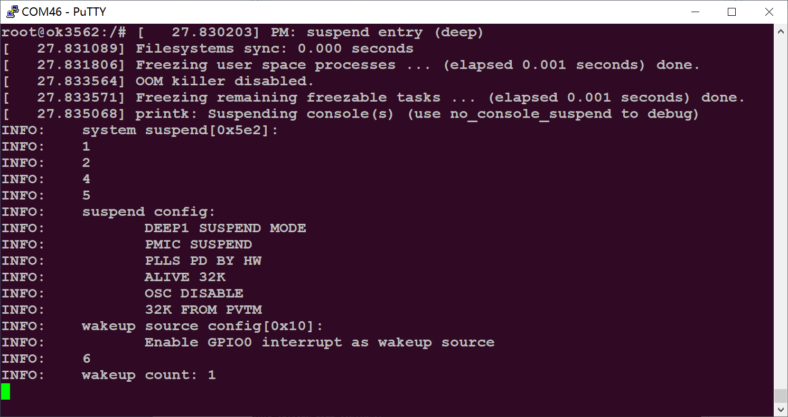
Short press the power button again to wake up:
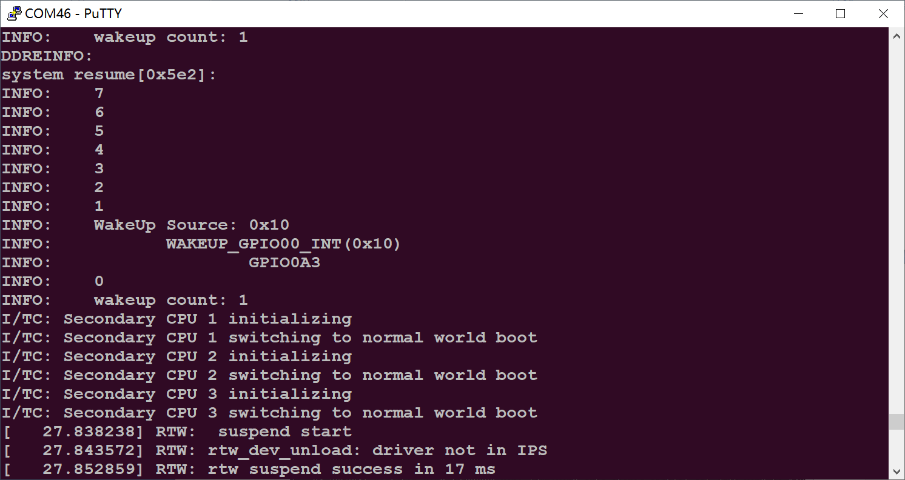
4.1.25 MCU Test
OK3562 supports M0 core testing Please contact Baoding Forlinx for the relevant test data and preparation method.
Below is the output of debugging serial port when starting M0 core firmware using UBOOT.
VOP VP0 enable Esmart0[1280x800->1280x800@0x0] fmt[1] addr[0x3e1ef000]
CLK: (sync kernel. arm: enter 600000 KHz, init 1008000 KHz, kernel 0N/A)
apll 600000 KHz
gpll 1188000 KHz
vpll 710000 KHz
hpll 983039 KHz
cpll 1000000 KHz
dpll 666000 KHz
aclk_bus 198000 KHz
hclk_bus 198000 KHz
pclk_bus 99000 KHz
aclk_peri 198000 KHz
hclk_peri 148500 KHz
pclk_peri 99000 KHz
## Loading loadables from FIT Image at 3c2c7040 ...
Trying 'mcu' loadables subimage
Description: mcu
Type: Standalone Program
Compression: uncompressed
Data Start: 0x3c2c7e40
Data Size: 61952 Bytes = 60.5 KiB
Architecture: ARM
Load Address: 0x07b00000
Entry Point: unavailable
Hash algo: sha256
Hash value: b44067ea73f44adc1e96b31854949b12f3bcca3903335a89d7ddfa1972f89f45
Verifying Hash Integrity ... sha256+ OK
Loading loadables from 0x3c2c7e40 to 0x07b00000
Welcome to forlinx OK3562 board mcu000 ...O This statement is the message that the M0 kernel prints out.
K
Net: eth0: ethernet@ffa80000, eth1: ethernet@ffb30000
4.1.26 SQLite3 Test
SQLite3 is a lightweight database that is ACID compliant relational database management system with low resource usage. OK3562-C development board is ported with version 3.21.0 of sqlit3.
root@ok3562:/# sqlite3
SQLite version 3.36.0 2021-06-18 18:36:39
Enter ".help" for usage hints.
Connected to a transient in-memory database.
Use ".open FILENAME" to reopen on a persistent database.
sqlite> create table tbl1 (one varchar(10), two smallint); // Create table tbl1
sqlite> insert into tbl1 values('hello!',10); // Insert data 'hello!|10' into table tbl1
sqlite> insert into tbl1 values('goodbye', 20); // Insert data 'goodbye|20' into table tbl1
sqlite> select * from tbl1; // Query the contents of table tbl1
hello!|10
goodbye|20
sqlite> delete from tbl1 where one = 'hello!'; // Delete data
sqlite> select * from tbl1; // Query the contents of table tbl1
goodbye|20
sqlite> .quit // Exit the database (or use the .exit command)
root@ok3562:/#
4.1.27 SPI Test
In the OK3562 platform’s carrier board schematic, there is an SPI test pinout located at carrier board position P8.

Short the SPI2_MOSI_MO and SPI2_MISO_M0 pins.
root@ok3562:/# fltest_spidev_test -D /dev/spidev2.0
spi mode: 0
bits per word: 8
max speed: 500000 Hz (500 KHz)
FF FF FF FF FF FF
40 00 00 00 00 95
FF FF FF FF FF FF
FF FF FF FF FF FF
FF FF FF FF FF FF
DE AD BE EF BA AD
F0 0D
PASS
4.1.28 Adding Boot Auto-start Script
Temporarily add a self-start script
1. Modify /etc/autorun.sh;
root@ok3562:/# cat /etc/autorun.sh
#! /bin/sh
# env
# user command
exit 0
2. Reboot the board to verify.
Add the boot self-start script to the burn image:
Modify buildroot/board/forlinx/ok3562/fs-overlay/etc/autorun.sh.
Recompile the package and burn the image.
4.1.29 Uboot Menu
Press space during U-boot startup to enter the U-boot menu when you see the following message.
Hit key to stop autoboot('Spacebar'): 0
The numbers in front of each item in the menu correspond to the respective operation commands.
---------------------------------------------
0:Exit to console
1:Reboot
2:Display type:mipi
3:amp start:off
4:combphy type:usb
---------------------------------------------
Enter 0 to access the U-Boot shell
Enter 1 to reboot the board
Enter 2 to modify the display mode. The Display type will cycle between “mipi”, “lvds”, and “none”.
mipi: Display on the MIPI interface, compatible with the Forlinx 7 - inch capacitive touch 1024*600 MIPI screen.
lvds: Display on the LVDS interface, compatible with the Forlinx 10.1 - inch capacitive touch 1280*800 LVDS screen.
none: Turn off the display.
Enter 3 to modify the amp operation status, and amp start will be displayed cyclically in the on “” off “.
on: Turn on the amp.
off: Turn off the amp.
Enter 4 to modify the combphy multiplexing function. The combphy type will cycle through “usb”, “pcie”, and “none” options.
usb: Multiplex combphy for USB functionality.
pcie: Multiplex combphy for PCIe functionality.
none: Turn off the combphy functionality.
After modifying through the U-Boot menu, changes are automatically saved without the need for manual saving.
4.1.30 NPU Test
root@ok3562:/# rknn_common_test /usr/share/model/RK3562/mobilenet_v1.rknn /usr/share/model/dog_224x224.jpg
rknn_api/rknnrt version: 1.6.0 (9a7b5d24c@2023-12-13T17:31:11), driver version: 0.9.3
model input num: 1, output num: 1
input tensors:
index=0, name=input, n_dims=4, dims=[1, 224, 224, 3], n_elems=150528, size=150528, fmt=NHWC, type=INT8, qnt_type=AFFINE, zp=0, scale=0.007812
output tensors:
index=0, name=MobilenetV1/Predictions/Reshape_1, n_dims=2, dims=[1, 1001, 0, 0], n_elems=1001, size=1001, fmt=UNDEFINED, type=INT8, qnt_type=AFFINE, zp=-128, scale=0.003906
custom string:
Begin perf ...
0: Elapse Time = 7.60ms, FPS = 131.56
---- Top5 ----
0.929688 - 156
0.007812 - 155
0.003906 - 205
0.000000 - 0
0.000000 - 1
NPU Use Reference: 01-Software Information\05-Original Information\docs\cn\Common\NPU.
5. OK3562 Platform Multimedia Test
Some application layer software for audio and video on the OK3562 platform uses Gstreamer, which supports hardware codecs. All examples in this section based on the GStreamer command line form. If users need a player with an interface, they can also use qt’s multimedia classes, which also support codecs, see the Qt Tests chapter.
The OK3562 platform has an internal video processing unit, the VPU, which supports hardware codecs for video in the following formats:
Video Decoding: H264, H265, VP9; maximum support 4Kx2K@30fps.
Video Encoding: H264, maximum support 1080p@60fps
Table of hardware codec parameters for the OK3562 platform:
Video Decoder |
Format |
Profile |
Resolution |
Frame rate |
|---|---|---|---|---|
H.265 |
Main Profile yuv420@L5.0 |
4096×2304 |
30 fps |
|
H.264 |
Main Profile yuv400/yuv420/yuv422/@L5.0 |
1920x1080 |
60 fps |
|
VP9 |
Profile0 yuv420@L5.0 |
4096x2304 |
30fps |
|
Video Encoder |
H.264 |
High Profile level4.2 |
1920x1080 |
60 fps |
5.1 Audio and Video Playback
5.1.1 Playing Audio and Video With Gst-play
Gplay is an audio/video player based on GStreamer that can automatically select the right plugin for audio/video play according to the hardware, and it is easy to run.
root@ok3562:/# gst-play-1.0 /userdata/media/1080p_60fps_h264-30S.mp4
//Play the video file with sound, and test the sound by the earphone
Press 'k' to see a list of keyboard shortcuts.
Now playing /userdata/media/1080p_60fps_h265-30S.mp4
Redistribute latency...
Redistribute latency...
Redistribute latency...
0:00:30.0 / 0:00:30.0
Reached end of play list.
5.1.2 Playing Video With Gst-launch
root@ok3562:/# gst-launch-1.0 filesrc location=/userdata/media/4k_30fps_h265-30S.mp4 ! qtdemux ! queue ! h265parse ! mppvideodec ! waylandsink
//Only play the video
Setting pipeline to PAUSED ...
Pipeline is PREROLLING ...
Pipeline is PREROLLED ...
Setting pipeline to PLAYING ...
Redistribute latency...
New clock: GstSystemClock
0:00:01.0 / 0:00:30.0 (3.6 %)
5.1.3 Playing Audio With Gst-launch
root@ok3562:/# gst-launch-1.0 filesrc location=/userdata/media/test.mp3 ! id3demux ! mpegaudioparse ! mpg123audiodec ! alsasink device=plughw:0,0
//Play the audio only, and the test is played by the headphones.
Setting pipeline to PAUSED ...
Pipeline is PREROLLING ...
Redistribute latency...
Pipeline is PREROLLED ...
Setting pipeline to PLAYING ...
New clock: GstAudioSinkClock
handling interrupt.
Interrupt: Stopping pipeline ...
Execution ended after 0:00:02.665159268
Setting pipeline to PAUSED ...
Setting pipeline to READY ...
Setting pipeline to NULL ...
Freeing pipeline ...
5.1.4 Playing Video and Audio With Gst-launch
root@ok3562:/# gst-launch-1.0 filesrc location=/userdata/media/4k_30fps_h265-30S.mp4 ! qtdemux name=dec dec. ! queue ! h265parse ! mppvideodec ! waylandsink dec. ! queue ! decodebin ! alsasink device=plughw:0,0
//Play the video file with sound, and test the sound by the earphone
Setting pipeline to PAUSED ...
Pipeline is PREROLLING ...
Redistribute latency...
Redistribute latency...
Pipeline is PREROLLED ...
Setting pipeline to PLAYING ...
Redistribute latency...
New clock: GstAudioSinkClock
^Chandling interrupt. (2.6 %)
5.2 Video Hardware Encoding
OK3562 supports up to H264 1920x1080 @ 60fps
5.2.1 Video Hardware Encoding H.264
root@ok3562:/# gst-launch-1.0 videotestsrc num-buffers=600 ! video/x-raw,framerate=60/1,width=1920,height=1080 ! mpph264enc ! h264parse ! mp4mux ! filesink location=test.mp4
Setting pipeline to PAUSED ...
Pipeline is PREROLLING ...
Pipeline is PREROLLED ...
Setting pipeline to PLAYING ...
Redistribute latency...
New clock: GstSystemClock
0:00:18.2 / 0:00:20.0 (91.0 %)
5.3 Video Hardware Decoding
OK3562 supports H.264 and H.265 video hardware decoding. The H.264 decoder handles up to 1920x1080@60fps, and the H.265 decoder supports 4K@30fps.
OK3562 uses the mppvideodec component for hardware video decoding, and its output formats are NV12, I420, and YV12.
5.3.1 Decoding and Playing H264 Format Video
root@ok3562:/# gst-launch-1.0 filesrc location=/userdata/media/1080p_60fps_h264-30S.mp4 ! qtdemux ! h264parse ! mppvideodec ! waylandsink
Pipeline is PREROLLING ...
[ 1705.438451] dwhdmi-rockchip fde80000.hdmi: Rate 266625000 missing; computeRedistribute latency. ..
NRedistribute latency...
dynamically
Pipeline is PREROLLED ...
Setting pipeline to PLAYING ...
Redistribute latency...
New clock: GstAudioSinkClock
0:00:01.4 / 0:00:30.0 (4.8 %)
5.3.2 Decoding and Playing H264 Format Video With Audio
root@ok3562:/# gst-launch-1.0 filesrc location=/userdata/media/1080p_60fps_h264-30S.mp4 ! qtdemux name=demux demux.video_0 ! queue ! h264parse ! mppvideodec ! waylandsink demux.audio_0 ! queue ! aacparse ! faad ! alsasink device=plughw:0,0
Pipeline is PREROLLING ...
[ 1705.438451] dwhdmi-rockchip fde80000.hdmi: Rate 266625000 missing; computeRedistribute latency. ..
NRedistribute latency...
dynamically
Pipeline is PREROLLED ...
Setting pipeline to PLAYING ...
Redistribute latency...
New clock: GstAudioSinkClock
0:00:01.4 / 0:00:30.0 (4.8 %)
5.3.3 Decoding and Playing H265 Format Video
root@ok3562:/# gst-launch-1.0 filesrc location=/userdata/media/4k_30fps_h265-30S.mp4 ! qtdemux ! h265parse ! mppvideodec ! waylandsink
Pipeline is PREROLLING ...
[ 1705.438451] dwhdmi-rockchip fde80000.hdmi: Rate 266625000 missing; computeRedistribute latency. ..
NRedistribute latency...
dynamically
Pipeline is PREROLLED ...
Setting pipeline to PLAYING ...
Redistribute latency...
New clock: GstAudioSinkClock
0:00:01.4 / 0:00:30.0 (4.8 %)
5.3.4 Decoding and Playing H265 Format Video With Audio
root@ok3562:/# gst-launch-1.0 filesrc location=/userdata/media/4k_30fps_h265-30S.mp4 ! qtdemux name=demux demux.video_0 ! queue ! h265parse ! mppvideodec ! waylandsink demux.audio_0 ! queue ! aacparse ! faad ! alsasink device=plughw:0,0
Pipeline is PREROLLING ...
[ 1705.438451] dwhdmi-rockchip fde80000.hdmi: Rate 266625000 missing; computeRedistribute latency. ..
NRedistribute latency...
dynamically
Pipeline is PREROLLED ...
Setting pipeline to PLAYING ...
Redistribute latency...
New clock: GstAudioSinkClock
0:00:01.4 / 0:00:30.0 (4.8 %)
5.3.5 Decoding and Playing VP9 Format Video
root@ok3562:/# gst-launch-1.0 filesrc location=/userdata/media/4k_30fps_vp9-30S.mp4 ! qtdemux name=dec dec. ! queue ! vp9parse ! mppvideodec ! waylandsink
Pipeline is PREROLLING ...
[ 1705.438451] dwhdmi-rockchip fde80000.hdmi: Rate 266625000 missing; computeRedistribute latency. ..
NRedistribute latency...
dynamically
Pipeline is PREROLLED ...
Setting pipeline to PLAYING ...
Redistribute latency...
New clock: GstAudioSinkClock
0:00:01.4 / 0:00:30.0 (4.8 %)
5.3.6 Decoding and Playing VP9 Format Video With Audio
root@ok3562:/# gst-launch-1.0 filesrc location=/userdata/media/4k_30fps_vp9-30S.mp4 ! qtdemux name=dec dec. ! queue ! vp9parse ! mppvideodec ! waylandsink dec. ! queue ! decodebin ! alsasink device=plughw:0,0
Pipeline is PREROLLING ...
[ 1705.438451] dwhdmi-rockchip fde80000.hdmi: Rate 266625000 missing; computeRedistribute latency. ..
NRedistribute latency...
dynamically
Pipeline is PREROLLED ...
Setting pipeline to PLAYING ...
Redistribute latency...
New clock: GstAudioSinkClock
0:00:01.4 / 0:00:30.0 (4.8 %)
5.4 Camera Test
The OK3562 supports the OV13855 MIPI camera as well as the UVC camera. First to test the UVC camera, here to Logitech C270 process test, the USB camera will be inserted into the development board, will automatically install uvc driver.
5.4.1 UVC Camera Test
5.4.1.1 Camera Recognition Detection and Format Support Queries
Camera Recognition Detection
root@ok3562:/# v4l2-ctl --list-devices //View the device node, and see that/dev/video40 & 41 is the USB camera node.
rk rkisp-statistics (platform: rkisp):
/dev/video38
/dev/video39
rkcif-mipi-lvds (platform:rkcif):
/dev/media0
/dev/media1
/dev/media2
……..
WIN2 USB2.0 PC Camera: WIN2 USB (usb-fed00000.usb-1.3):
/dev/video40
/dev/video41
/dev/media4
The format supports queries
root@ok3562:/# v4l2-ctl --list-formats-ext -d /dev/video40 //View formats supported by the camera
ioctl: VIDIOC_ENUM_FMT
Type: Video Capture
[0]: 'YUYV' (YUYV 4:2:2)
Size: Discrete 640x480
Interval: Discrete 0.033s (30.000 fps)
Size: Discrete 352x288
Interval: Discrete 0.033s (30.000 fps)
Size: Discrete 320x240
Interval: Discrete 0.033s (30.000 fps)
Size: Discrete 176x144
Interval: Discrete 0.033s (30.000 fps)
Size: Discrete 160x120
Interval: Discrete 0.033s (30.000 fps)
5.4.1.2 Camera Capture Format Queries and Modifications
Camera Capture Format Queries
root@ok3562:/# v4l2-ctl -V -d /dev/video40
Format Video Capture:
Width/Height : 640/480
Pixel Format : 'YUYV' (YUYV 4:2:2)
Field : None
Bytes per Line : 1280
Size Image : 614400
Colorspace : sRGB
Transfer Function : Rec. 709
YCbCr/HSV Encoding: ITU-R 601
Quantization : Default (maps to Limited Range)
Flags :
5.4.1.3 Camera Image Preview and Taking Pictures
Camera Image Preview
root@ok3562:/# gst-launch-1.0 v4l2src device=/dev/video40 ! videoconvert ! video/x-raw,format=NV12,width=640,height=480 ! waylandsink
Setting pipeline to PAUSED ...
Pipeline is live and does not need PREROLL ...
Pipeline is PREROLLED ...
Setting pipeline to PLAYING ...
New clock: GstSystemClock
Redistribute latency...
0:00:19.3 / 99:99:99.
Camera to take pictures
root@ok3562:/# gst-launch-1.0 v4l2src device=/dev/video40 num-buffers=1 ! videoconvert ! video/x-raw,format=NV12,width=640,height=480 ! mppjpegenc ! filesink location=pic.jpg
Setting pipeline to PAUSED ...
Pipeline is live and does not need PREROLL ...
Pipeline is PREROLLED ...
Setting pipeline to PLAYING ...
New clock: GstSystemClock
Redistribute latency...
Got EOS from element "pipeline0".
Execution ended after 0:00:01.224944503
Setting pipeline to NULL ...
Freeing pipeline ...
//After the execution, check the pic. jpg file generated under the root directory
5.4.2 OV13855 Test
For raw sensors such as OV13855, each sensor corresponds to 5 device nodes:

Mainpath, refers to an output node of Rockchip ISP, which can output full-resolution images, generally used to take photos and capture Raw images.
Self Path refers to an output node of Rockchip ISP, which can only output up to 1080p resolution and is generally used as a preview.
Statistics 3A
Input-params 3A parameter setting
The test methods for the OV13855 are essentially the same as those for the UVC Camera. This section takes OV13855 as an example for testing
5.4.2.1 Camera Recognition Detection and Format Support Queries
root@ok3562:/# v4l2-ctl --list-devices //View the device node
rkcif (platform:rkcif-mipi-lvds):
/dev/video0
/dev/video1
/dev/video2
/dev/video3
/dev/video4
/dev/video5
/dev/video6
/dev/video7
/dev/video8
/dev/video9
/dev/video10
rkisp_mainpath (platform:rkisp-vir0):
/dev/video33
/dev/video34
/dev/video35
/dev/video36
/dev/video37
/dev/media3
WIN2 USB2.0 PC Camera: WIN2 USB (usb-fed00000.usb-1.3):
/dev/video40
/dev/video41
/dev/media4
5.4.2.2 Camera Previews
root@ok3562:/# gst-launch-1.0 v4l2src device=/dev/video33 ! video/x-raw, format=NV12, width=640, height=480, framerate=30/1 ! waylandsink
Setting pipeline to PAUSED ...
Using mplane plugin for capture
Pipeline is PREROLLED ...
Setting pipeline to PLAYING ...
New clock: GstSystemClock
Redistribute latency...
0:00:16.3 / 99:99:99.
5.4.2.3 Camera to Take Pictures
root@ok3562:/# gst-launch-1.0 v4l2src device=/dev/video33 num-buffers=1 ! video/x-raw,format=NV12,width=640,height=480 ! mppjpegenc ! filesink location=pic.jpg
Setting pipeline to PAUSED ...
mpi: mpp version: Without VCS info
mpp_rt: NOT found ion allocator
mpp_rt: found drm allocator
[ 138.542571] rk_vcodec: vpu_service_ioctl:2138: error: unknown vpu service ioctl cmd 40086c01
Pipeline is live and does not need PREROLL ...
Setting pipeline to PLAYING ...
New clock: GstSystemClock
Got EOS from element "pipeline0".
Execution ended after 0:00:00.175951625
Setting pipeline to PAUSED ...
Setting pipeline to READY ...
Setting pipeline to NULL ...
Freeing pipeline ...
root@ok3562:/# ls -l pic.jpg
-rw-r--r-- 1 root root 15273 Apr 29 15:14 pic.jpg
root@ok3562:/#
5.4.2.4 Recording H264 Format Video
root@ok3562:/# gst-launch-1.0 v4l2src device=/dev/video33 num-buffers=100 ! video/x-raw,format=NV12, width=640,height=480 ! tee name=t ! queue ! mpph264enc ! queue ! h264parse ! qtmux ! filesink location=13855_h264.mp4 t. ! queue ! waylandsink
//Encode H264 during camera preview
Setting pipeline to PAUSED ...
Using mplane plugin for capture
Pipeline is live and does not need PREROLL ...
Pipeline is PREROLLED ...
Setting pipeline to PLAYING ...
New clock: GstSyst[emClock
424.198360] rockchip-csi2-dphy csi2-dcphy0: csi2_dphy_update_sensor_mbus fail to get dphy param, used default value
[ 424.200657] rkisp_hw fdcb0000.rkisp: set isp clk = 396000000Hz
[ 424.204220] rkcif-mipi-lvds: stream[0] start streaming
[ 424.204242] rkcifhw fdce0000.rkcif: Only support one master device, master device count 0
[ 424.204260] rockchip-csi2-dphy csi2-dcphy0: csi2_dphy_update_sensor_mbus fail to get dphy param, used default value
[ 424.204962] rkcif-mipi-lvds: Allocate dummy buffer, size: 0x00436000
[ 424.205013] rockchip-mipi-csi2 fdd10000.mipi0-csi2: stream on, src_sd: 00000000d34b3a12, sd_name:rockchip-csi2-dphy0
[ 424.205021] rockchip-mipi-csi2 fdd10000.mipi0-csi2: stream ON
i 424.205043] rockchip-csi2-dphy csRedistribute latency...
2-dcphy0: csi2_dphy_update_sensor_mbusRedistribute latency...
fail to get dphy param, used default value
[ 424.205051] rockchip-csi2-dphy csi2-dcphy0: csi2_dphy_update_sensor_mbus fail to get dphy param, used default value
[ 424.205066] rockchip-csi2-dphy0: dphy0, data_rate_mbps 600
05073] rockchip-csi2-dphy csi2-dcphy0: csi2_dphy_update_sensor_mbus fail to get dphy param, used default value
[ 424.205344] rockchip-csi2-dphy csi2-dcphy0: csi2_dphy_s_stream stream on:1, dphy0
[ 424.205352] rockchip-csi2-dphy csi2-dcphy0: csi2_dphy_s_stream stream on:1, dphy0
Got EOS from element "pipeline0".
Execution ended after 0:00:03.382733006
Setting pipeline to NULL ...
[ 427.611291] rkcif-mipi-lvds: stream[0] start stopping, total mode 0x1, cur 0x1
Freeing pipeline ...
[ 427.614953] rockchip-mipi-csi2 fdd10000.mipi0-csi2: stream off, src_sd: 00000000d34b3a12, sd_name:rockchip-csi2-dphy0
[ 427.615000] rockchip-mipi-csi2 fdd10000.mipi0-csi2: stream OFF
[ 427.615827] rockchip-csi2-dproot@ok3562:/# hy csi2-dcphy0: csi2_dphy_s_stream_stop stream stop, dphy0
[ 427.615868] rockchip-csi2-dphy csi2-dcphy0: csi2_dphy_s_stream stream on:0, dphy0
[ 427.615934] rockchip-csi2-dphy csi2-dcphy0: csi2_dphy_s_stream stream on:0, dphy0
[ 427.635242] rkcif-mipi-lvds: stream[0] stopping finished
[ 427.674994] rkisp rkisp0-vir1: first params buf queue
root@ok3562:/# ls -l 13855_h264.mp4 //Check to see if an H264 file is generated
-rw-r--r-- 1 root root 417871 Apr 29 15:15 13855_h264.mp4
root@ok3562:/#
5.4.2.5 Playing H264 Format Video
root@ok3562:/# gst-launch-1.0 filesrc location=13855_h264.mp4 ! qtdemux ! queue ! h264parse ! mppvideodec ! waylandsink
//Play H264 video
Setting pipeline to PAUSED ...
Pipeline is PREROLLING ...
Pipeline is PREROLLED ...
Setting pipeline to PLAYING ...
Redistribute latency...
New clock: GstSystemClock
Got EOS from element "pipeline0".
Execution ended after 0:00:03.303679248
Setting pipeline to NULL ...
Freeing pipeline ...
5.4.3 OV5645 Test
The test methods for the OV5645 are essentially the same as those for the UVC Camera. This section takes OV5645 as an example for testing
5.4.3.1 Camera Recognition Detection and Format Support Queries
root@ok3562:/# v4l2-ctl --list-devices //View the device node
rkisp-statistics (platform: rkisp):
/dev/video38
/dev/video39
rkcif-mipi-lvds (platform:rkcif):
/dev/media0
/dev/media1
/dev/media2
rkcif (platform:rkcif-mipi-lvds3): //Depending on the location of the access, it maybe rkcif-mipi-lvds2
/dev/video22
/dev/video23
/dev/video24
/dev/video25
/dev/video26
/dev/video27
/dev/video28
/dev/video29
/dev/video30
/dev/video31
/dev/video32
rkisp_mainpath (platform:rkisp-vir0):
/dev/video33
/dev/video34
/dev/video35
/dev/video36
/dev/video37
/dev/media3
5.4.3.2 Camera Previews
rkcif-mipi-lvds2 corresponding /dev/video11
rkcif-mipi-lvds3 corresponding /dev/video22
root@ok3562:/# gst-launch-1.0 v4l2src device=/dev/video22 ! video/x-raw, format=NV12, width=640, height=480, framerate=30/1 ! waylandsink
Setting pipeline to PAUSED ...
Using mplane plugin for capture
Pipeline is PREROLLED ...
Setting pipeline to PLAYING ...
New clock: GstSystemClock
Redistribute latency...
0:00:16.3 / 99:99:99.
5.4.3.3 Camera to Take Pictures
root@ok3562:/# gst-launch-1.0 v4l2src device=/dev/video22 num-buffers=1 ! video/x-raw,format=NV12,width=640,height=480 ! mppjpegenc ! filesink location=pic.jpg
Setting pipeline to PAUSED ...
mpi: mpp version: Without VCS info
mpp_rt: NOT found ion allocator
mpp_rt: found drm allocator
[ 138.542571] rk_vcodec: vpu_service_ioctl:2138: error: unknown vpu service ioctl cmd 40086c01
Pipeline is live and does not need PREROLL ...
Setting pipeline to PLAYING ...
New clock: GstSystemClock
Got EOS from element "pipeline0".
Execution ended after 0:00:00.175951625
Setting pipeline to PAUSED ...
Setting pipeline to READY ...
Setting pipeline to NULL ...
Freeing pipeline ...
root@ok3562:/# ls -l pic.jpg
-rw-r--r-- 1 root root 15273 Apr 29 15:14 pic.jpg
root@ok3562:/#
5.5 Gst Point Test
The current gstreamer supports the fixed-point function for playing videos. Please enter the following command to test.
root@ok3562:/# gst-launch-1.0 uridecodebin uri=file:///oem/SampleVideo_1280x720_5mb.mp4 ! fpsdisplaysink name=fps0 video-sink="waylandsink render-rectangle=\"<120,180,480,300>\"" text-overlay=false & gst-launch-1.0 uridecodebin uri=file:///userdata/media/1080p_60fps_h264-30S.mp4 ! fpsdisplaysink name=fps1 video-sink="waylandsink render-rectangle=\"<600,180,480,300>\"" text-overlay=false
Screen display result
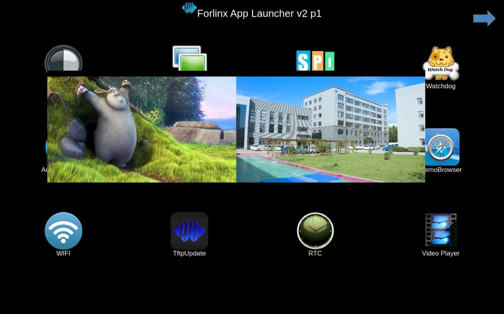
Note: Multi-channel decoding playback of H264 1080P60 and H265 4KP30 videos stutters, which is caused by insufficient decoding capability.
5.6 GPU Test
OK3562 supports GPU testing.
root@ok3562:/# glmark2-es2-wayland --fullscreen --visual-config='a=0:buf=24' --annotate //Full screen test
arm_release_ver: g13p0-01eac0, rk_so_ver: 10
=======================================================
glmark2 2023.01
=======================================================
OpenGL Information
GL_VENDOR: ARM
GL_RENDERER: Mali-G52
GL_VERSION: OpenGL ES 3.2 v1.g13p0-01eac0.98c5dad4e3309b873e3189000b74ea36
Surface Config: buf=24 r=8 g=8 b=8 a=0 depth=24 stencil=0 samples=0
Surface Size: 1024x600 fullscreen
=======================================================
[build] use-vbo=false: FPS: 723 FrameTime: 1.385 ms
[build] use-vbo=true: FPS: 766 FrameTime: 1.306 ms
[texture] texture-filter=nearest: FPS: 1005 FrameTime: 0.996 ms
[texture] texture-filter=linear: FPS: 999 FrameTime: 1.001 ms
[texture] texture-filter=mipmap: FPS: 1014 FrameTime: 0.987 ms
[shading] shading=gouraud: FPS: 560 FrameTime: 1.788 ms
[shading] shading=blinn-phong-inf: FPS: 710 FrameTime: 1.409 ms
[shading] shading=phong: FPS: 563 FrameTime: 1.777 ms
[shading] shading=cel: FPS: 543 FrameTime: 1.842 ms
[bump] bump-render=high-poly: FPS: 309 FrameTime: 3.240 ms
[bump] bump-render=normals: FPS: 995 FrameTime: 1.005 ms
[bump] bump-render=height: FPS: 921 FrameTime: 1.087 ms
[effect2d] kernel=0,1,0;1,-4,1;0,1,0;: FPS: 390 FrameTime: 2.567 ms
[effect2d] kernel=1,1,1,1,1;1,1,1,1,1;1,1,1,1,1;: FPS: 151 FrameTime: 6.663 ms
[pulsar] light=false:quads=5:texture=false: FPS: 968 FrameTime: 1.034 ms
[desktop] blur-radius=5:effect=blur:passes=1:separable=true:windows=4: FPS: 214 FrameTime: 4.690 ms
[desktop] effect=shadow:windows=4: FPS: 674 FrameTime: 1.486 ms
[buffer] columns=200:interleave=false:update-dispersion=0.9:update-fraction=0.5:update-method=map: FPS: 140 FrameTime: 7.171 ms
[buffer] columns=200:interleave=false:update-dispersion=0.9:update-fraction=0.5:update-method=subdata: FPS: 139 FrameTime: 7.239 ms
[buffer] columns=200:interleave=true:update-dispersion=0.9:update-fraction=0.5:update-method=map: FPS: 223 FrameTime: 4.486 ms
[ideas] speed=duration: FPS: 350 FrameTime: 2.857 ms
[jellyfish] <default>: FPS: 410 FrameTime: 2.442 ms
[terrain] <default>: FPS: 32 FrameTime: 32.203 ms
[shadow] <default>: FPS: 304 FrameTime: 3.298 ms
[refract] <default>: FPS: 82 FrameTime: 12.213 ms
[conditionals] fragment-steps=0:vertex-steps=0: FPS: 965 FrameTime: 1.037 ms
[conditionals] fragment-steps=5:vertex-steps=0: FPS: 693 FrameTime: 1.445 ms
[conditionals] fragment-steps=0:vertex-steps=5: FPS: 931 FrameTime: 1.075 ms
[function] fragment-complexity=low:fragment-steps=5: FPS: 783 FrameTime: 1.279 ms
[function] fragment-complexity=medium:fragment-steps=5: FPS: 598 FrameTime: 1.673 ms
[loop] fragment-loop=false:fragment-steps=5:vertex-steps=5: FPS: 783 FrameTime: 1.279 ms
[loop] fragment-steps=5:fragment-uniform=false:vertex-steps=5: FPS: 785 FrameTime: 1.274 ms
[loop] fragment-steps=5:fragment-uniform=true:vertex-steps=5: FPS: 687 FrameTime: 1.457 ms
=======================================================
glmark2 Score: 587
=======================================================
root@ok3562:/# glmark2-es2-wayland --visual-config='a=0:buf=24' --annotate //正常显示测试
arm_release_ver: g13p0-01eac0, rk_so_ver: 10
=======================================================
glmark2 2023.01
=======================================================
OpenGL Information
GL_VENDOR: ARM
GL_RENDERER: Mali-G52
GL_VERSION: OpenGL ES 3.2 v1.g13p0-01eac0.98c5dad4e3309b873e3189000b74ea36
Surface Config: buf=24 r=8 g=8 b=8 a=0 depth=24 stencil=0 samples=0
Surface Size: 1280x800 fullscreen
=======================================================
[build] use-vbo=false: FPS: 561 FrameTime: 1.783 ms
[build] use-vbo=true:
6. System Flashing
The OK3562-C development board currently supports both OTG and TF card programming. The corresponding burning tool is provided in the user information, and the user can choose anyone to burn the image.
6.1 OTG Flashing System
6.1.1 OTG Driver Installation
Path: 02-User Information \ 01-Software Information \ 04-Tools \ DriverAssitant _ v5.1.1.zip
Extract the above path file to any directory and run it with administrator privileges
Open DriverInstall.exe

Click “Driver Installation”

6.1.2 OTG Full Flashing Test
6.1.2.1 RKDevTool Flashing Test
Path: 02-User Information \ 01-Software Information \ 04-Tools\ RKDevTool _ v3.19 _ for _ window. Zip
It is a development tool provided by Rockchip Micro. Unzip it to a full English path before use, connect the TYPE-C0 port of the development board and the host computer with a Type-C cable, press and hold the recovery key of the development board and don’t release it, then press the reset key to reset the system, and release the recovery key after about two seconds. There will be prompts on the Rockchip development tool : loader device found
Note:
The device detection operation requires the recovery button to be held down when the development board is powered on;
Theoretically, Rockchip development tools have no requirements for the unzip directory. However, some users have feedback that the unzip directory should be in full English. If the tool doesn’t match the following figure, please consider unzipping it in an English directory;
The OTG port is on the back of the development board.

Open the Rockchip development tool:

Click the “Upgrade Firmware” tab, click the “Firmware” button to select the full upgrade image update.img. The program will be parsing the firmware, so wait a while.

Click “Switch” to wait for the board to enter the LOADER mode, and click the “Upgrade” button to upgrade.
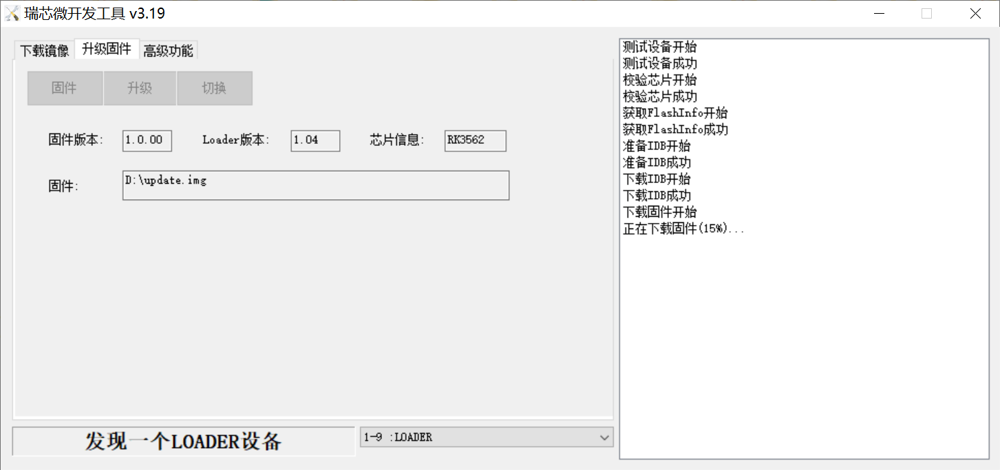
Introduction to MASKROM mode
If Loader mode is inaccessible (loader problem, etc.), press and hold the BOOT key, then press the reset key to enter maskrom mode for burning.

At this time, the system will prompt the discovery of a maskrom device. The flashing process is consistent with the loader mode, so it is best to use an update.img burning.
Note:
Don’t click “Device Partition Table” in maskrom mode, it is invalid;
A separate flash in maskrom mode will not clear the UBOOT environment variables.
6.1.2.2 Factory Tool Flashing Test
Factory Tool is a factory batch OTG flashing tool, which does not need to read the image and supports large file flashing. Use this tool if RKDevTool is not compatible. Before use, you need to decompress to the full English path, connect the development board to the host, press the recovery key, press the reset key to reset, and release the recovery key after two seconds. There will be prompts on the Rockchip development tool : loader device found
Note:
The device detection operation requires the recovery button to be held down when the development board is powered on;
Theoretically, Rockchip development tools have no requirements for the unzip directory. However, some users have feedback that the unzip directory should be in full English. If the tool doesn’t match the following figure, please consider unzipping it in an English directory.
Open the Rockchip development tool:

Click to select the firmware, and click to start. At this time to recognize the loader device will automatically start burning.


6.1.3 OTG Step Flashing Test
In the development phase, it is very time-consuming to burn all of them every time, so here is the method of using OTG burning tool to burn in separate partitions.
Note: The condition for recognition is that the development board is powered up and the recover key is in the pressed state.
First, after OK3562-linux-release is compiled, a separate partition image can be found in the rockdev directory.
Take separate programming boot.img (including device tree and startup logo) as an example to demonstrate the programming method.
Use the Type-C cable to connect the development board to the host. Press and hold the recover key and do not release it. Then press the reset key to reset the system. Release the recover key after about two seconds. The system will prompt to discover the loader device.

Click the “Device Partition Table” button, which will automatically read the partition address, and prompt you to update the download address, click “Yes”, will be reported to read the partition table successfully, click on the partition of the right test area to select the partition image, and check the partition.
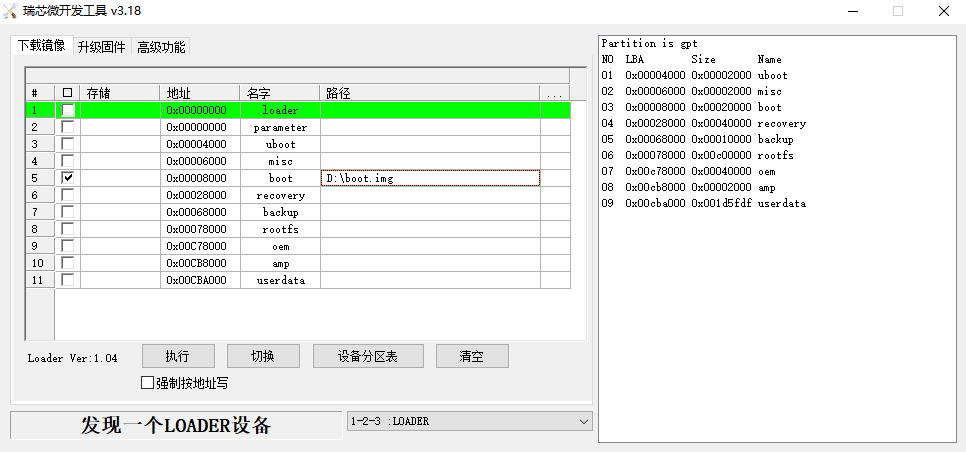
Click the “Execute” button will automatically burn and restart.
6.2 TF Card Flashing
TF card flashing and testing.
Note: The maximum capacity of the test TF card is 32G, using a TF card above 32G may fail to burn.
Copy SDDiskTool_v1.76.zip from the user profile tools directory to any directory on windows. Run SD_Firmware_Tool.exe with administrator privileges.

Select the disk device, check “Firmware Upgrade” and select update.img. Click Start Creating.


Insert the TF card into the development board and start, the system will automatically enter the flashing process. When the flashing is complete, both the screen and the serial port will prompt:
Please remove SD CARD!!!, wait for reboot.
At this time, pull out the TF card, the system automatically restarts (please do not power down directly).
During mass production, check the flashing status by SoM heartbeat light. Heartbeat light modes are as follows:
Kernel startup phase: Heartbeat light mode, regular intermittent flashes.
Flashing preparation phase: EMMC indicator light, off.
Flashing in progress phase: EMMC indicator light, on.
Flashing completion phase: Heartbeat light mode, regular intermittent flashes.
Serial port information during the burning process:

If the automatic restart does not occur after removing the TF card, a manual restart can also complete the burning. Please be patient during the burning process.